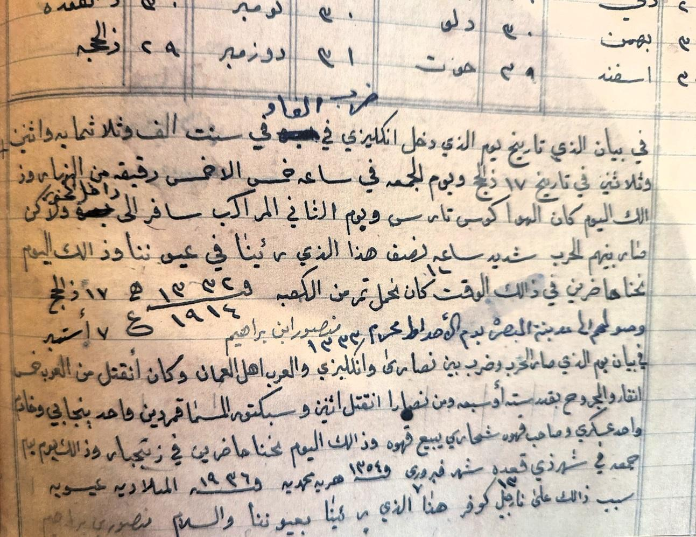
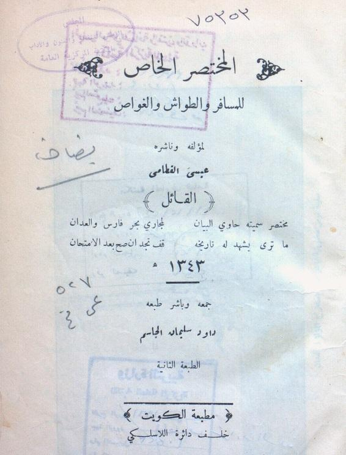
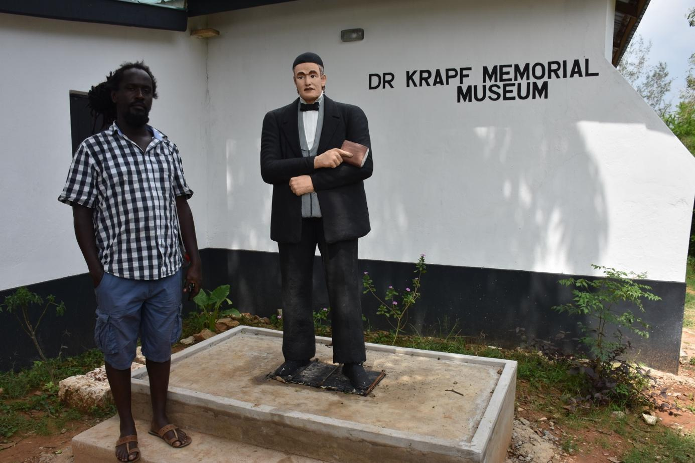
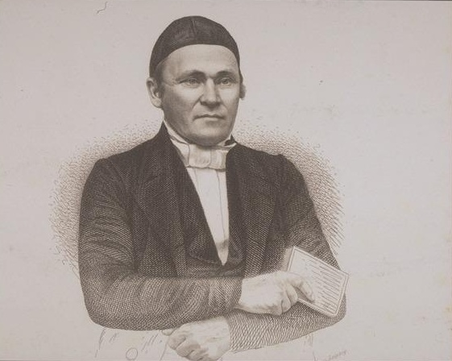
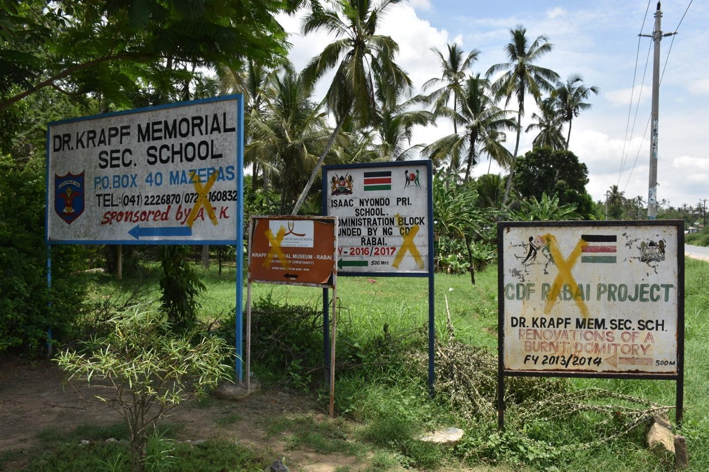
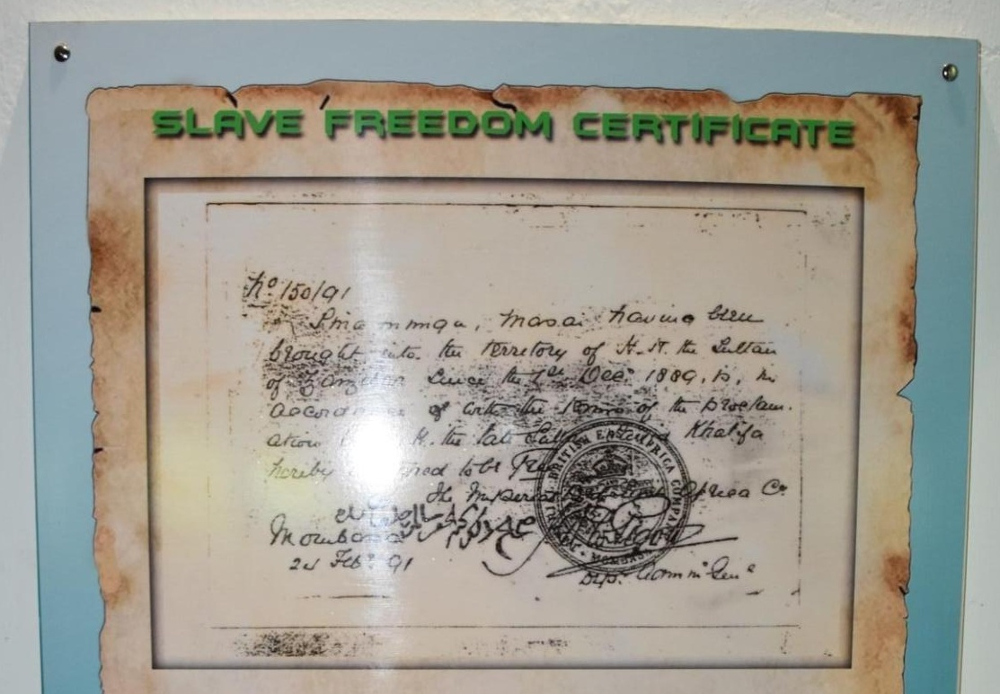
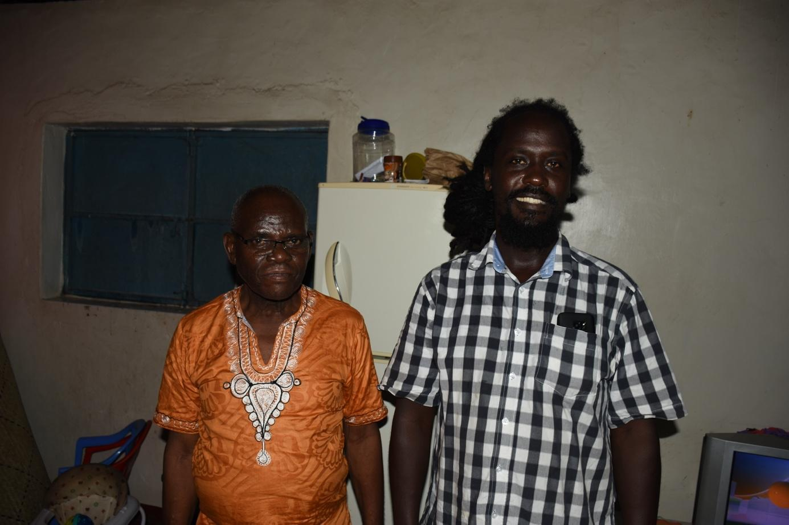
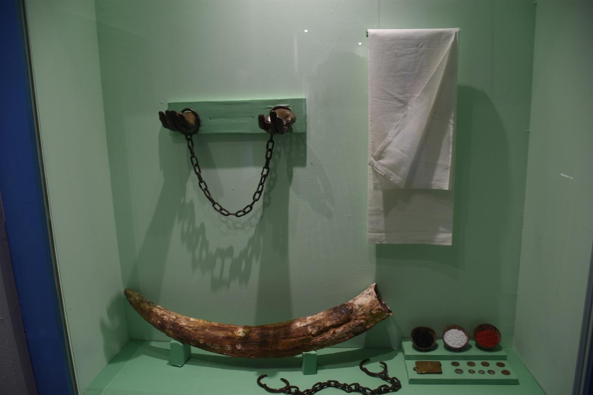
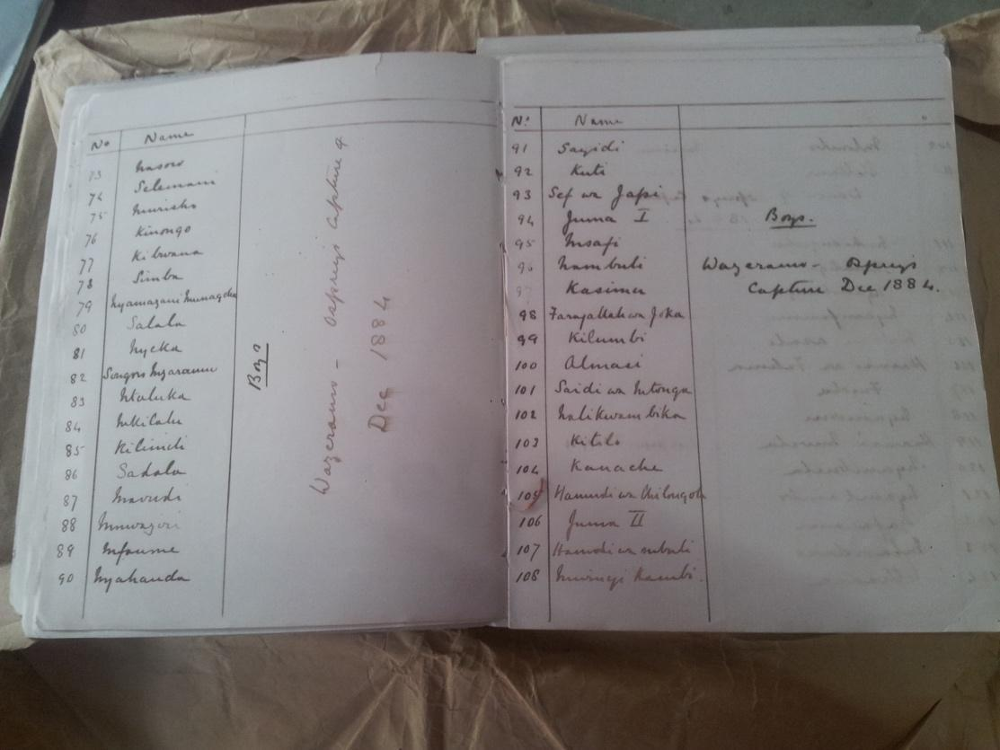

Aural Inheritances of the Swahili Seas - Yvonne Adhiambo Owuor und John Njenga Karugia im Gespräch mit Natascha Ginwala
Arabien auf See - Wege jenseits der Küsten - Fahad Bishara
Ein Fenster zum Meer: Frauen, Männer und Heilige des Indischen Ozeans - Nidhi Mahajan
Gedanken im Schwebezustand - Momtaza Mehri
Die Insel und die Küste: Sansibar und Dar - May Joseph
Wenn die Wellen des Roten Meeres Liebesmelodien herübertragen, sprechen wir von Qaraami - Dr. Jama Musse Jama, Kulturzentrum Hargeysa, Hargeysa, Somaliland
Deutschland im Afrasiatischen Meer – Erinnerungsräume - John Njenga Karugia
Si(s)tas
By Ari Gautier1
Deutsche Version
Inyoni began to panic. Hadali, the cursed kingdom, seemed larger and deeper than she had imagined. She feared that Orpheus would not be able to withstand the pressure at this depth. The underwater craft’s metal sheets were vibrating, its bars visibly bending under pressure and the windows were beginning to crack. They would not last long. Djibril, the commander-in-chief of the army, stepped into the cabin, visibly agitated.
“Are you sure we’re going the right way, Inyoni? I feel like we are going deeper than necessary. Going any further down would be too dangerous. We are headed towards disaster! You’ll get us all killed!”
“I don’t know Djibril. Baobab stopped responding. Look, the monitor just died, due to the pressure. I don’t know what to do. Do you think I should warn Mambamuntu?”
“I’m afraid so.”
Samudrakumari and Padaguboodam were impressed by the imposing Fort Kota. It stood on the abyssal plain of Hadali, a vast territory feared by all. For many years, this kingdom had enjoyed a relatively quiet reign that was however suddenly disrupted by the Zungarees, who had fled their star system after the invasion of the Two-Paws. Originally, the Zungarees were peaceful creatures who had always coexisted in harmony with their neighbours – until the day the Two-Paws invaded.
The latter, a bloodthirsty species that had destroyed the planet Earth, their home for thousands of years, had left it to conquer space, in the course of which they chased the Zungarees out of their stellar system. The Zungarees had no choice but to leave these skies and were condemned to exile. After years of wandering, they left to explore the depths of the seas on several other planets. Finally, they found refuge in Hadali. The Hadalians were a millennia-old people who, despite their wealth and deep knowledge of the universe, lived a quiet existence in their isolated kingdom. Their remarkable wisdom and profound sense of justice had kept them out of the conflicts and wars of other realms. So when the Zungarees came seeking refuge, the Hadalians saw fit to help them and welcomed them with open arms.
How could they have suspected that this unfortunate decision would prove fatal to their peaceful existence?
Shortly after they arrived, the Zungarees discovered something that would forever change the course of the Hadali kingdom’s history.
Far from the abyssal plain of Hadali was a secret territory that the Hadalians kept under guard. No one was allowed to visit it. The Hadalians allowed the Zungarees to stay in their kingdom on the condition that they respect this golden rule: No one was allowed to enter this forbidden place. At first, the Zungarees refrained from visiting this secret area, despite their growing curiosity. But since rules are made to be broken, they ended up taking advantage of the Hadalians’ benevolence to satisfy their desire to know more. When they ventured into the forbidden place, they realised that they could no longer be content to remain mere guests in the kingdom of Hadali: In reality, this forbidden territory consisted of underwater mines brimming with minerals that were highly coveted by underwater dwellers across the universe. The Hadalians’ worst fear came true: to profit from the thousands of polymetallic nodules containing nickel, manganese, cobalt, gold, copper and other minerals that the universe needed, the Zungarees seized power over the kingdom and enslaved the Hadalians. As their greed grew day by day, they soon realised that the people they had enslaved were too few to work the mines. The Zungarees needed new resources. They decided to go look elsewhere for other people to enslave.
“We must hurry, Samudrakumari. We don’t have much time.”
“I know, Padaguboodam. Mackouhanuman will join us at any moment with his army. I hope nothing bad happens to Muthukaruppan.”
Hiding behind a mountain, the two friends watched – fascinated and frightened – as people came and went through the underwater city’s huge gate. Menacing-looking Makaras, creatures with elephant trunks, alligator teeth and fish tails, were standing guard around the fortress. They were the new mercenaries that the Zungarees had captured to work as guards. The air was thick with nervous tension. Something was not right. No sooner had the inhabitants passed through the gate that they came back with their arms fully loaded, piling things into huge submarines that were leaving for an unknown destination. It looked like the city was being drained of its population.
“Do you have a plan?”
“I don’t but Mackouhanuman does.”
“But time is running out! Each second we lose can be fatal. I don’t even know if your lover is still alive.”
“Shut up, Padaguboodam. Don’t talk about death! It’s bad luck.”
“Actually, how did you meet Muthukaruppan?"
Shortly after they seized power in Hadali, the Zungarees set out to look for other people to enslave across the vast underwater world.
They tricked their way into different kingdoms, posing as traders and navigators to first infiltrate them and then take over and then capture people who they enslaved and brought back to Hadali.
Muthukaruppan placed a necklace made of sea flowers around Mambamuntu’s neck. She cupped his face in her hands and kissed him passionately. A murmuration of cormorants passed through the yellow sky. Muthukaruppan was about to depart. The two lovers had met at the edge of the red river, true to their habits.
“It’s just a few days, Mambamuntu. I’ll be back very soon, my darling.”
“I know, my love. But I am worried about you.”
As was the custom, the groom was to bring back the “Star of Happiness” to his fiancée as a sign of bravery. This star was in a faraway dangerous territory swarming with pirates and slavers.
Mambamuntu was right to be concerned. Recently, several patrols had reported unusual movement in the area.
“Promise me you’ll come back. Don’t forget that soon we are to be united in marriage.”
Mambamuntu gently kissed his forehead and watched him leave, stricken by sadness.
Muthukaruppan and the other enslaved prisoners were taken to the kingdom of Creyolistan. Its inhabitants, the Creyolis, were half human and half fish.
Creyolistan had once been part of the mythical lost continent Kumarikandam. Back then, Creyolistan was called Mauritia. It was a place cursed by the gods, inhabited only by enslaved people and labourers who had been brought from all over Kumarikandam to work the land, as the Tritanis, the inhabitants of Kumarikandam, considered it degrading to touch the ground. Then one day the great catastrophe struck. The different speeds at which the planet’s poles and its equator were rotating created an unbearable tension, finally causing the planet’s mantle to warp, breaking apart the continents. Kumarikandam fractured into many pieces and sank to the bottom of the ocean. While some parts disappeared completely without a trace, others survived in total isolation, as the underwater population was not particularly interested in them. Mauritia was one of the territories that had broken away from Kumarikandam, taking with it the enslaved people, servicemen and different peoples of the continent who had survived the catastrophe. While before, they had lived among their respective ethnic groups, they now had found themselves living together in Mauritia, sharing a common destiny. They formed a new people called the Creyoli and renamed Mauritia Creyolistan. All was well until the day when the Zungarees burst into this peaceful territory. They threatened to kill Karuppusamy, the king of Creyolistan, if he did not accept their conditions. They demanded that he give them the right to use his territory as a halfway point where the enslaved people they had brought would be kept until being sent onward to their final destination, Hadali.
The ruler had no choice but to accept this request – which was really more of a threat – or he would not only lose his kingdom but also put the life of his beloved daughter Samudrakumari at risk. Peaceful Creyolistan was transformed into a penal colony from which only complaints and lamentations escaped. It could not escape its curse...
When she first caught sight of him, Samudrakumari could not take her eyes off him. It was a sweltering summer evening. The air was heavy, the breeze refused to rise and the leaves of the motionless trees seemed to be dozing in the heat.
Even though her father had forbidden it, Samudrakumari had come to the banks of the Pagliyaru, the beautiful purple river that ran through their area, with her friends to get some fresh air. They had sorely missed playing by the river. It was their favourite place to pick flowers and swim.
Since the enslaved prisoners were on the other side of the river, there was, in principle, no risk of seeing them nor of being reprimanded by the Zungaree guards. After picking some flowers, they decided to go for a swim. They approached the shore and that’s when Samudrakumari saw him. Alone in the river, Muthukaruppan seemed to be meditating. Phosphorescent stars floating all around him enveloped him in a glowing god-like aura. The two moons seemed to shine even brighter, illuminating his sculpted, athletic body. There was something fascinating about this man, something regal. Samudrakumari was curious to know who he was. Men and women were strolling around in the enclosure they were kept in, under the watchful eye of the guards. Having sensed their presence, Muthukaruppan opened his eyes and saw the girls looking at him. He was surprised to see them and gazed at them in wonder. It was his first time ever seeing Creyolis, for since their arrival they had been living in isolation, only among other men and women destined for Hadali.
They struck him as beautiful, with their half-human half-fish bodies. But his admiring rêverie was cut short when a guard approached and ordered him to get out of the water. It was with great regret that Muthukaruppan left to join his companions. However, just before leaving, he had caught an enigmatic sparkle in the girl’s eyes.
“So you’ve never spoken to him?” Padaguboodam asked, bewildered.
“No... But we communicated without words,” Samudrakumarir replied hesitantly, embarrassed by this unexpected question. “I used to go see him often. I would hide and watch him discreetly. But he was no fool. He knew I was there. He felt my presence but never dared to approach me. I don’t know if it was for fear of punishment or simply because he was not interested in me. But I was starting to fall for him. I wanted him. I wanted him to stay with us. I wanted to take him out of the miserable condition he was in. I wanted to become one with him. My father panicked when I told him about my decision. He wanted so much to grant my wish – he never refused anything I asked him for. But he feared the wrath of the Zungarees and, knowing my stubbornness, he thought it best to send me to you. I beg your pardon for having made up this romance between Muthukaruppan and me. But I had no choice. I really want to save him. Do you understand?”
“I should have known. I’m so stupid! How could you have been able to talk to him, given your father’s restrictions and next to all these guards. But do you realise the risk you are running by coming here to save him? You don’t even know if he loves you.”
“I know all that, Padaguboodam. I know I’m taking a huge risk. It doesn’t matter if he loves me or not. It’s about saving him from this bad fate.”
“I knew that you were a whimsical person, Samudrakumari, but to take such a huge risk is beyond unreasonable. And what shall I tell your father? As his best friend and ally, I never went against his will. I should have told him and I’m sorry I didn’t. You’re going to get me in trouble, girl.”
“My father would be proud of his daughter. Anyway, everyone would celebrate the Zungarees’ downfall. It’s high time their reign came to an end. If we had anything to do with it, my father would be more than happy. Trust me, we’re on the right side of history. How about you think a little about our strategy instead of questioning everything,” she said, half smiling, half angry. “Look, here comes your General Mackouhanuman. He must have a plan.”
“So here is the latest news,” Mackouhanuman, the amphibian monkey, announced. He was a formidable warrior and an excellent strategist. His squadrons were feared by all armies. He was the only one who could save Muthukaruppan from this nightmare.
Mambamuntu awoke with a start. Something was not right. She opened the door of her cabin only to come face to face with Djibril, who explained the situation to her.
“How much further is it?”
“No idea, Mambamuntu. All I know is that we’re running a huge risk if we go any lower. Orpheus won’t make it.”
Mambamuntu looked distraught. They were far from their home territory and she knew of no one nearby they could ask for help.
“Inyoni, do you know where we are?”
“We don’t know, Mambamuntu. Baobab stopped working. We were close to Creyolistan when it broke down.”
“Creyolistan? What is that?”
“It’s the kingdom of the Creyolis. It used to be part of Kumarikandam but broke away,” Djibril answered. “But wait, Inyoni. If we were in the vicinity of Creyolistan just now, it means that we’ve gone down too far. Because Creyolistan is in the deepest abyss, isn’t it?”
“You’re right. Why didn’t I think of that earlier?”
“Come on, let’s go back up as fast as we can. Get everyone ready!”
Mambamuntu felt energised by this latest information. It was time to bring Muthukaruppan home. She couldn’t wait any longer.
After more than two years away, her fiancé still had not returned. Mambamuntu had moved heaven and earth to find out what had happened to him. No one could give her a concrete answer. Some said he was dead; there were rumors that he had run off with a secret lover. But Mambamuntu refused to believe these rumors. She was convinced that something bad had happened to Muthukaruppan. But what it was, she could not say. One day, a sailor came to see her. He had just returned from a long journey. He told her that while he was in Creyolistan, he had heard about a certain Muthukaruppan. He told her that the young man had been kidnapped by the Zungarees who enslaved him and took him to Hadali. Despite the bad news, Mambamuntu was overjoyed. So he was not dead! It was absolutely necessary to go look for him and to find him as soon as possible. Bad things were in store for Hadali. Several rulers of other kingdoms had their sights set on Hadali, scheming to conquer it and take advantage of its riches. The Zungarees were constantly on guard. Yet the Gautar, conquerors from very far away, managed to attack Hadali and were about to completely seize power over the kingdom. When Mambamuntu heard this news, she decided to go to Hadali. She gathered her army of Lwas. The Gautar attack would offer an opportunity to save Mambamuntu, she thought. Mackouhanuman’s strategic plan was based on the same idea.
“Who are they?” Samudrakumari asked, surprised, looking at the newcomers who were also trying to hide behind the mountain.
“I don’t know. Do you, Mackouhanuman?”
“It’s Mambamuntu, the Taino princess, with her army of Lwas.”
“What is she doing here?” Samudrakumari looked worried. “Can you send someone to find out what they are doing here?”
“There’s no need, Samudrakumari, my spies have already told me.”
“So?”
Mackouhanuman was about to answer but was interrupted by a loud noise. An explosion. The entrance gate collapsed. Three more explosions followed, bringing down all the entry points. Hundreds of AMX 500s rushed into the fort and attacked the Zungarees, who fled without really resisting. The Gautar army was too powerful. They had carefully orchestrated the attack to leave the Zungarees no chance to strike back. Taking advantage of the attack, Djibril and Mackouhanuman regrouped their armies and went in search of the enslaved prisoners. Getting rid of the guards and the tiny Zungaree squadron was child’s play for the two generals. But when they reached the citadel, they found no one there.
“Where are they?” Worried, Mambamuntu asked Djibril, who was also wondering the same. He looked for Mackouhanuman but did not find him. Something told him that Mackouhanuman knew where the prisoners were. He was not wrong at all, for Mackouhanuman had indeed already found the dungeon in which Muthukaruppan and his friends were held. But a bad surprise awaited them.
“Mackouhanuman, what is going on?”
Samudrakumari could not believe his eyes. Thousands of starfish were interlocking with each other to form a wall all around the men and women, who were helplessly watching this extraordinary phenomenon.
“What are these stars doing?” Mambamuntu asked. Mackouhanuman looked grim.
“We must hurry! We’re running out of time. The Zungarees are walling up Muthukaruppan and the other enslaved people.”
“They are walling them up? But how?”
“You see these starfish? Thousands of them? Well, they were programmed to form a wall around the prisoners in the event of an attack.”
“But why? That’s monstrous!”
“It’s to safeguard their treasure. All the mining systems and access codes to the mines are locked up in this dungeon. The Zungarees think immuring the prisoners willl keep their treasure safe until they return.”
“So what are you waiting for? Get rid of these stars and free Muthukaruppan! Come on, we must attack!” Mambamuntu was about to attack the starfish.
“It’s not that easy, Mambamuntu,” Mackouhanuman countered. “These stars are not real. I mean, they are not physically real. They are virtual stars.”
“What should we do then? We can’t just sit here and leave these men and women behind this wall.” Samudrakumari looked distraught.
“For God’s sake, Djibril, do something! I didn’t come all this way to see him vanish like that,” Mambamuntu pleaded with her army general.
“Padaguboodam is the only person who can save us. Where is he anyway?”
Mackouhanuman set off in search of Padaguboodam. The others followed.
“Sepdt, Pô Tolo, Sigui Tolo…” Padaguboodam mumbled incomprehensible words while drawing mysterious signs in the yellow sky. His Kanaga mask gave him a strange air that Samudrakumari had never seen before.
“Padaguboodam is not only the King of Sakalavanur but he is also the great spiritual master of the Mask Society. As such, he knows the science and secrets of the stars. To stop the starfish from forming this wall, he must manage to align the stars in the sky – this will stop this diabolical process. This is no small task. Come on, let him do his work. We just have to pray that he succeeds.” While Mambamuntu and Samudrakumari discreetly went away, Mackouhanuman gathered everyone else and retreated a little further away.
Padaguboodam began with Dama movements. This dance had the power to chase away death. Then he moved Sigui Tolo to the right of Pô Tolo. Pô Tolo is the heaviest star. It contains the three primordial elements: water, fire and air. It is the most important star that maintains the alignment. It is solid yet flexible enough to allow for multiple combinations.
Then he asked the star Emma Ya to move a little lower next to Nommo. He moved Yorugu next to Khartikya and Tarakya. This alignment allows the other stars to keep a regular curve. This is very important to stop the starfish. And he moved the last Dana Tolo to the end of the line. That would be enough. Tired but content, he left to find Mackouhanuman and his friends.
Muthukaruppan felt that something was happening. The starfish seemed to start behaving erratically and to slow down. When they had seen the thousands of stars closing in around them, Muthukaruppan and his friends had been gripped by panic. It had only taken a few minutes for them to realise that the Zungarees had decided to immure them alive. Was this the way this life would end? Dying without seeing his beloved again seemed deeply unjust. Would he, the valiant warrior of Sakalavanur, have to die like this? What a disgrace! He did not mind dying – but not under these conditions! However, it was better to die than to live enslaved by those damned Zungarees. The wall was growing denser by the minute. There was nothing left to do. He closed his eyes to summon Mambamuntu’s face in his mind’s eye. He might as well leave this life thinking of his beloved rather than having to see those cursed starfish closing in on them. But suddenly he heard cries of joy. He opened his eyes again: The wall was collapsing; the starfish were scattering. And then he saw her, he saw her smile – she was there: Mambamuntu, ready to welcome him in her arms. Tears of happiness were running down her cheeks. She was laughing and crying at the same time. He left the dungeon and ran into her arms.
Mambamuntu, Muthukaruppan and the Lwas army bade farewell to Karuppusamy and prepared to leave Creyolistan. Inyoni switched on Orpheus and programmed the route to Sakalavanur.
“By the way, something is off... I feel like I haven’t seen Djibril on board,” Muthukaruppan, worried, asked Mambamuntu.
“Djibril? You’ll have to ask Samudrakumari,” she answered with a wink.
Aural Inheritances of the Swahili Seas
Yvonne Adhiambo Owuor and John Njenga Karugia in conversation with Natasha Ginwala
Deutsche Version
Addressing the Swahili Ocean and Afrasian coastlines as repositories of transcultural memory and ancestral belonging, author Yvonne Adhiambo Owuor and John Njenga Karugia, researcher and documentary filmmaker, delve into literary, acoustic and scholarly practices of chronicling maritime cosmopolitanisms and communal histories while also remaining alert to more-than-human custodians of the sea.
The conversation took place as part of the exhibition Indigo Waves and Other Stories: Re-Navigating the Afrasian Sea and Notions of Diaspora (6.4.–13.8.2023), curated by Natasha Ginwala und Bonaventure Soh Bejeng Ndikung with Michelangelo Corsaro. The exhibition consisted of two parts that had been composed in resonance, showing concurrently at the Gropius Bau and SAVVYContemporary in Berlin. The conversation was introduced and moderated by Natasha Ginwala. It has been edited for the Gropius Bau Journal.
Natasha Ginwala2: It’s such a huge pleasure to have with us today people who have been crucial to the shaping of our endeavour here at the Gropius Bau, at SAVVY Contemporary and at Zeitz MOCAA: “Indigo Waves and Other Stories: Re-Navigating the Afrasian Sea and Notions of Diaspora”. This project wouldn’t be what it is without the voices and the work of people like Yvonne Adhiambo Owuor and John Njenga Karugia.
I see both of you as inhabitants and travelers – “Jahazis” as poet Haji Gora Haji would put it – of the Swahili seas connecting us to the multitudinous past but also complicating the idea of Kenya today through the intrinsic notion of diasporic cultures and Afro-Asian imaginaries. The politics of naming is something that we must all wrestle with. You both have done it in academic work, in literary work and you’ve spoken about it extensively. I wonder at this time where there is this push towards a certain currency around the Indian Ocean World or it as a sort of subset of study and categorisation: How do we escape the traps that come with a certain regionalism? What does the politics of naming have to do with it?
John Njenga Karugia3: There is everything cosmopolitan about the Indian Ocean. I think cosmopolitanism is about dialogue, cosmopolitanism is about taking responsibility, the idea of taking your responsibility towards others seriously. So, in the sense of the politics of naming then to call a shared space, a shared waters, “Indian” is already very problematic because it transports the Indian subcontinent and the Indian nation and excludes many others.
Yvonne Adhiambo Owuor 4: I think it’s even more serious than that and linked to the history of what I call the evacuation of all African agency. There was a malice that came from those who invaded that space, that cosmopolitan, that global space and decided that the narrative of especially African agency of the waters does not fit the taxonomy created with that pigmentation hierarchy by some of those idiots, including Carl Linnaeus5. The offence that the latter Portuguese and the English felt when they had to confront the reality that there was a navigational history; navigational methods; a history of trade that did not centre or involve the West at all. Life had been going on, especially in this global monsoon complex, where the West was peripheral. The African person, the person whose skin was dark, had played a very pivotal role. It wasn’t about dominance but involvement and agency around trade, around history, around education, technology and around the ocean. There were all these stupid mythologies that the African was terrified of the ocean. The Africans’ engagement with the ocean was limited to the shoreline as artisanal fishermen or they were cargo on somebody else’s ship going off to be sold as slaves. There were over 300 types of ships and a lot of them were being built in places along the East African coast, like Pate Island. The vestiges are still there. Yet, there was this need to evacuate – and it was quite successful – and remove all sense of the African imaginary. Even within the Indian subcontinent you have the Siddis. They are basically former East Africans who settled in Gujarat in the same way that former Indians settled in parts of East Africa. The Siddis to this day, even in contemporary Indian literature, are referred to as former slaves. I had the privilege of hosting a performance group from Gujarat in East Africa when I was with the Zanzibar Film Festival. They told their own stories of who they are and how they ended up there as sailors, teachers, merchants, adventurers. Not slaves. It’s that same narrative that’s repeated where you find the African diaspora in Persia, or other places. One becomes extremely conscious of what it actually meant to evacuate, erase and remove all African agency and to also deny the historical rootedness of our oceanic imaginary. It’s not just the politics of naming. It’s about the politics of erasure, dehumanisation and evacuation.
Njenga Karugia: At the section in the exhibition where my work is shown, there is a photo that I took at the Museum Bahari in Jakarta. Bahr means “ocean” in Arabic, in Indonesian and in Kiswahili it is bahari. In the museum there were about seven rooms trying to recapture the history of arrival of the various ethnic communities into Indonesia and voyagers. The rooms were called “The Room of the Portuguese Sailor”, “The Room of the Japanese Sailor” and so on. Especially disturbing for me was that Vasco da Gama was exhibited there in the form of a huge human cut-out out of cardboard6. We know from history and from his own diary that he never would have made it all the way to India and other places along the Indian Ocean, be it Kilwa Kisiwani or Malindi, without “pilots”. These pilots were known across the Indian Ocean, across the Afro-Asian Sea, across the Swahili seas. They knew how to read the stars. If you did not know how to read the stars in these geographies and topographies, you would not sail. So, what do I do in such spaces? I arrive there and I realise: “What is going on with the Blackness in this space?” So, I install myself within it and I have somebody take a photo of me just for a moment to say: “Yes, I am the ancestor of those pilots. And although you erase me – well for a moment, I’m here.” And maybe that image will travel around.
Ginwala: Thinking about orality since we’re addressing erasures, systemic erasures – we’ve also been referencing music and sonic practices in the exhibition. Of course, in my orbit a lot of that also came through Bonaventure Soh Bejeng Ndikung, who is the co-conspirator of this project, but also through you, Yvonne. One of the places that we all have now been to is the Dhow CountriesMusic Academy in Zanzibar, which is a major centre to preserve the knowledge of Taarab music, of Kidumbak, of Ngoma and so forth. There is a special mix that was created with students and teachers of the Dhow Countries Music Academy of a track called ‘Pakistan’. It was recorded in Bombay for the first time, but this particular mix was sung in Zanzibar, in Stone Town. So, it is really messing with the geopolitical pressures, it does this incredible sonic circuit – the song ruptures the notion of the nation as a singular space and turns it into lyric. It is also sung in a way that it is passed on in a matrilineal way. Originally, it was composed by Siti binti Saad7. When I heard it, it was sung by Siti Muharam, who is her great granddaughter. It would be great to discuss the sonic legacy that really is bleed into your work, whether it’s your documentary, dear John, or your writing or the atmosphere in which you breathe in Stone Town while you are imagining the writing that is to come, dear Yvonne.
Njenga Karugia: When I listen to the song, I hear the drums of my grandmother in Naivasha. I would call these sounds that I have heard before and that relate to this music “Swahili Sea Music”. I heard these sounds before I ever saw the sea because as a child, I was living about 700 kilometres away from the ocean. The song also takes me to Indonesia. To a time after I had met the ocean and I was studying the ocean. I’m walking in Bandung, which is, for me, the most musical city anywhere in the world – there is music playing everywhere. As I walk down the street, I hear Taarab sounds. This music penetrates my soul – it was probably the most connected music that I’ve felt. Finally, I’ll take you somewhere else: I am somewhere in Ahmedabad in Gujarat at what they call “Siddi compounds”. We are spending an evening in their home, we are in their grandmother’s bedroom, which also serves as a sitting room, and we are exchanging music. The grandmother sings. My ears are trying to listen to her very carefully, but I can’t comprehend what she’s saying. So, I write down the phonetics of what she’s singing – she is actually singing in her Gujarat language; she is singing in Swahili. This is Swahili that has been spoken amongst the African Indians for centuries. She’s singing: “This boy does not have a father and does not have a mother.” The grandmother then realises: “This man says he knows the words of the song and he can tell us what it means.” I said: “I can only tell you a bit of what it means, but I do not know what it means in your context.”
Adhiambo Owuor: The song took me back to Zanzibar when I was immersed in the landscape of this incredible music. There are so many varieties of Taarab. Taarab is part of the gift of those seas to this world, to the worlds of the Indian Ocean. You will run into its varieties and variations all along these waters of ours. There’s something more than universal, something fundamental and mysterious about the music. It’s almost as if through song you have a kind of cartography of worlds. The song travels in this incredible way. When you enter into the experience of Taarab, wherever it is you do, it almost opens a door and you enter into it. It’s not music that hits you in the face. It draws you into itself and you are suddenly wandering into its places and spaces, even if you do not understand the words. They say Taarab is an Arabic loanword which I doubt. The scholars that come in later attribute everything to the Arabs or to the Persians, never to the people of the coast. Just because I can and I’m an artist, I’m going to say that Taarab is a Swahili word. I can! Argue with me! It’s the same concept linked to what a lot of you know as the 1001 Nights, which within the Swahili space is known as Alfu Lela Ulela. The Swahili will not say it belongs to them. They’ll say it belongs to all. It belongs to everyone. It’s not attributed to one particular culture or race. It is the very same thing with Taarab.
Ginwala: It is fascinating to me how it leaks into the space of writing for you. It is something that is very particular. There is that embodied sense of rhythm.
Adhiambo Owuor: I use a particular version of Taarab in The Dragonfly Sea that is very well known and has so many variations. Before I begin a story, I have to hear its music. And its music finds me. I don’t look for it. When it comes to me, it’s almost as if I have been given permission now to find the story. The music is like a stream and on the back of the stream of music, the characters then show up.
Ginwala: This would be a good moment to think beyond the human protagonists as guardians, also of the sea. It’s something that feels so disruptive to continue to navigate only using the human subject’s perspective. What’s been really incredible is that we have several works in the exhibition that have been pivotal to this project that shift from the human to the beyond human, for example when it comes to the works by the artist Clara Jo. They go to the mineral, they go to the bird, they go to different life forces, which are narrating the stories back to us, reminding us of how this belonging has taken shape.
Adhiambo Owuor: As a contemporary world, as a modern world, we are only learning again to be humble enough to hear from the others. The idea of the agencies of other beings. Certainly, when you end up in this world of the Indian Ocean, it’s absolutely fascinating how the lines between worlds are very thin. You will hear of Djinns spoken of as normal in a conversation: “Nadia saw a Djinn last night” – and it’s not a strange conversation at all. Living in Zanzibar, coming back from work late at night you had the idea of presences or long shadows around you that are moving. It is the idea of the capacious self, the idea that there is a place for mystery and for wonder and for strangeness. I hope to pay a lot more tribute to that aspect of our being. I think we need it anyway as part of our humanity.
Njenga Karugia: As a young man coming from the hinterland from Naivasha, hundreds of kilometres away from the ocean, I remember we heard stories about Djinns, spirits in the water, and we were warned about them without having ever been to the ocean. These were stories of mermaids and their shadows and their in-betweens. When I was about twenty-one, we went on a university trip to the ocean. My eyes met the eyes of a woman and I thought: “I was told about you. I know who you are.” But she looked so fine. So, I stole another glance and I thought to myself: “Should I risk it all? Do I want to attend the ritual? Do I want to disappear?”
Ginwala: Another protagonist who’s been crucial to you, and it’s important to me to pay homage to him, is Haji Gora Haji. Individuals like him, who are poet navigators, conjoin the many things we’ve been speaking about.
Adhiambo Owuor: Haji Gora Haji died two years ago. He was the unofficial poet laureate of Tanzania. His work was more than sublime. He’d be called in for national celebrations to do the kind of Utendi, the recitals, in any one of the versions of poetic forms that he knew. But he was also regarded as a gadfly, a kind of a subversive figure. The state would never give him an award for the simple reason that he would show up at a national celebration, do his incredible poetry, leave and two days later the state government and officials would realise that they had been insulted and abused and made mockery of completely. They couldn’t summon him because he would be very innocent. He would say: “No, I was talking about a butterfly!” Haji Gora Haji proceeded to become one of the finest mentors that a human being could ever ask for. He started life off as a fisherman; he was a minstrel. He came from one of the marginalised islands of Zanzibar called Tumbatu that has a long history with Persia, what we now know of as Iran. He had this way of reading the waters. He’s the character that inspires the character of Muhidin in The Dragonfly Sea. If you could say that there was a figure in the world that wrote the sea, that gave a biography of the sea, that named the waters, that delivered its metaphors in the most unexpected and beautiful ways – it was this man of Tumbatu but yet a man of worlds of the Indian Ocean. He had this way of speaking the world. One time when I went to meet him for an interview, I had been infected by the alleged anxieties about the Chinese returning to East Africa. But he asked: “Tell me exactly what your anxiety is about. People come. People go. People leave. The water ebbs, the water flows, the water ebbs. What’s so unusual about this?” He was my old man of the sea. A very precious human being, a mischievous man with a sense of humour – a naughty man, but a most delightful human being.
Ginwala: Since China has been mentioned in this way, also as an ebb and flow – there is a lot of anxiety in this part of the world and a lot of ignorance around China and Chinese presences in the plural sense in the Afro-Asian seas, in the Swahili seas. There are different striking ways in which you have both also chronicled Chinese presences.
Njenga Karugia: There has been a heated debate in Germany about China and Chinese interests at the Hamburg port. Cosco, one of the largest harbour operators, has been allowed by the German government to take over 24.9% of the Hamburg harbour – this is nothing new, but we have seen a new jurisprudence coming up within the European Union and it is the idea of screening Chinese investments, especially now that China has interests across the ports in Europe. Why do I start with that? China of course is investing in Germany. And we know that Germany trades heavily with China: 30% of goods that are processed at the Hamburg harbour are either coming in from China or leaving for China. One of the greatest gifts that I would say as a Kenyan German global citizen is the fact that we have been gifted by scientists who demilitarised the Internet as a military technology and made it available for everyone. It is the idea of democratisation of knowledge and the idea that I can sit in my little office in Berlin and look at data from across the world. I’m able to watch the trade between Germany and China. I’m able to watch the trade between the US and China. There is no American economy and there is no Chinese economy. There is the Amerochina economy. When Africa trades with China everybody has something to say about that trade. The continent of Africa has opportunity for everybody to trade with Africa. What people are looking for, at least the farmers and those who are producing, is a political economy of dignity: People want to sell and they want to receive fair prices for their goods. They do not want gifts. It is ignorant that people don’t take a moment to reflect. Western media will frame Africa-China relations using the term “colonialism”. There is no African who wakes up in the morning and sits under a tree and looks at the fluctuating colonialisms. People want to do business. People are busy producing, selling, looking for markets and so on. Those societies that are reflecting Africa in terms of colonialism are not reflecting themselves. And the media in terms of colonialism? They call their relation “trade”.
Adhiambo Owuor: At the heart of it is the whining. The whining comes from the West. There are incredible new spaces of opportunities that have emerged because of the return of old relationships – and I emphasise the fact that it’s old relationships. At the heart of “The China sky is falling on African heads” is another issue. There’s something deeper beneath that surface.
Ginwala: Maybe this is a good moment to turn this more conversational. Is there anything someone in the audience would like to share or bring up?
Audience member 1: I have a question regarding what we are doing with these stories. I come from southern India, mostly the coastal regions, and I’ve been living here for the last ten years or so. What I’m very curious about is how are we engaging with these stories and with such discourses on our shores.
Adhiambo Owuor: We were doing this already thirty years ago. It’s only that the world has caught up with us right now. So much of the work had already been done by some of the incredible scholars like Professor Abdul Sheriff or the late Taqī ad-Dīn an-Nabhānī. That’s part of the reason why people like me don’t consider themselves an academic. I’ve moved into this area so long ago the West had receded from my imagination when the ocean found me. I understood that I too, am a descendant of immense ancient legacies and I was very embarrassed that I had not been aware of it yet.
Ginwala: I think the question is very crucial. As we sit in Berlin, a place that’s saturated with artistic presence and contributions, it was really important to Bonaventure and me that the project didn’t start in Germany. We are doing a residency in Pakistan, in Lyari, where there is an Afro-Asian community. The Siddis are there and the Baloch people and their own inheritances of the sea. It was also important to us for the project to land in South Africa. I’ve also done work in Sri Lanka connecting to maritime histories and histories of war. It seems it’s up to us to recirculate and to index the scholarship that has already taken place in the past.
Adhiambo Owuor: And to take the steps to visiting and entering into these worlds, even just by showing up. It’s such an incredible time with the whole world moving, turning its gaze into those oceans that some people call “Indian” right now. In so many ways it is in the centre of the future – these immense opportunities for everyone. No one is left out. I just want everyone else to know that. These immense opportunities for recovery, for discovery and for imagining new ways.
Njenga Karugia: I’m coming from memory studies and I am looking at how memories are produced and what these memories are used for but also asking a third and important question: How can we do memory better? When I’m in these spaces and I visit museums and memory spaces, and especially when I was doing the documentary film Afrasian Memories in East Africa together with Ramadhan Khamis, we engaged the people who are responsible in doing the memory. I am very interested in the idea of cosmopolitanism and representation of cosmopolitan within cosmopolitan spaces. What kind of stories are we then telling? What kind of representation are we doing? These spaces and places have their heroes and their poetry and music – what local stories can we connect within all these translocalities?
Audience member 2: Yvonne, I was thinking of what you said about the evacuation of agency and what must be then done to imagine a kind of counterforce to it. Ocean currents today are a measure of time. Some last a few seconds and then some are thousands of years old as well. There is a suboceanic force. What is a way to rewild instead of replace agency? Can the idea of brutality of the ocean itself be thought of as some mode of sensing that agency as well? I am thinking about the implosion of the submersible Titan in June 2023 for example.
Adhiambo Owuor: Beyond brutality, I would imagine reading it as a reminder of the forces that despite our human hubris, actually take precedent over our illusions and delusions of dominance. As much as we imagine we can, we will not dominate the oceans. I hope that we will be there to receive the waves, to open our senses, to pick up the stories that are there. There are enough of us to pick a story strand to tell, to paint, to sing, to restore. There is an act of recovery, of rebuilding the ruins of our imagination of stories. And in a way, it’s also restoring and restorying the ocean. I’m curious – those who are of German origin: Do you consider yourself a Hanseatic civilisation? Are you also an oceanic civilisation? What’s the relationship with the sea?
Audience member 3: There is a huge limestone quarry close to Berlin. That limestone quarry consists of calcium, of shells – it’s the sea that was here millions and millions of years ago. We are walking on it and are surrounded by it every day. We can tune into the stories of that old sea that was here. I personally have no relationship with the Hanseatic history of the sea but learning about that limestone quarry touched me a lot.
Audience member 4: When we’re talking about restoring, I feel that we need to have more conversations and acknowledge the commonality. I think there’s been a lot of dividing – the after effect of colonialism. We are not aware of what is common between us. We are more aware of the differences and I think we can decolonise in a way, if we bring out what is common.
Ginwala: I just can’t help but come back to this question of complicating the idea of Kenya, especially also Swahili, Kiswahili politics in relation to language politics. I am thinking about somebody like Ngũgĩ wa Thiong'o and the question whether the language you write in can put you into prison or not8. What are the complexities and complications also in the language legacy as you see it today?
Njenga Karugia: In “Globalectics: Theory and the Politics of Knowing”, Ngũgĩ talks about globalectical imagination. It is the idea that a story from Pakistan, if it is translated, can speak to you.
Adhiambo Owuor: Beyond Ngũgĩ there is a contemporary space – and it does not take away from Ngũgĩ – that some of us call the promiscuity of languages. Swahili itself is not just a language. It becomes a world and an absorbent substance that takes whatever it needs to be what it wants to be. Locating ourselves in the water and looking at the land, there is this fluidity: The water is fluid, it is informed by the winds and the winds bring whatever they need to bring into the space. A new song is always born when the winds show up. I think of language as an entity, an organic form, a container of words. We cannot be limited by the constraints of what we think language is. Language to live must evolve. Language to live must be able to change.
Arabia at Sea
Fahad Ahmad Bishara
Deutsche VersionBy the time the nakhoda (dhow captain) Mansur Al-Khariji sat down and penned the colophon to his manuscript in March 1945, he had already been sailing for more than forty years and taking notes for nearly as long. His first voyage, he wrote, was with his older brother ‘Ali in 1895; seven years later he would begin learning how to captain his own vessel. Decades after Al-Khariji’s death, a Kuwaiti research center would publish his notebook as a navigational guide with the rather unwieldy title Al-Qawā‘id wa Al-Mayl wa Al-Natija fi ‘Ilm Al-Biḥār [The Principles and Declinations and Almanac in the Science of the Seas] which Al-Khariji himself appended to the book’s inside cover page. But there was little to suggest that there was a coherent project behind the book itself: he cobbled together the different principles of navigation and data that one might find in other navigational manuals, but much of it consisted of what appeared to be notes to himself. Rather than a coherent treatise on navigation, Al-Khariji’s writing more closely resembles a notebook in which he jotted down various principles of navigation and their accompanying maxims, but also different rules, formularies, observations, poetry, and more. The only threads that ran through the different entries in the book were Al-Khariji himself, of course, and the fact that all of these were collected on his dhow as he sailed around the Western Indian Ocean.
A ship captain’s notebook may seem like an unlikely place from which to reflect on how we write history—but on the deck of a dhow, we might read things a little differently. Because for nakhodas like Al-Khariji, the world looked different than what it does when we stare at it on a map. Where we see landmasses separated (or connected) by bodies of water, they saw seas and oceans ringed by coasts: waterways and sea lanes that bled into one another, and an oceanic world that washed up onto the shores of the Arabian Peninsula, Africa, and India. From the deck of the dhow, then, what historians understand to be the “Middle East” or “Arabia” appeared to wash into the waters of their more immediate milieu, the Arabian Sea.
For Al-Khariji, the Arabian Sea was more than just a scholarly construct; it was the world in which he lived. From the turn of the century onward, he spent most of his time at sea, shuttling back and forth between the Gulf, South Asia, the Southern Red Sea, and East Africa. His notebook reflected this broad geography, but so too did his dhow: nakhodas like him took on sailors from Yemen, and saw themselves as part of a broader community of Arab mariners. It is through Al-Khariji, his dhow, and these mariners more generally that we can begin to think about the watery contours of the Arabian Peninsula. The promise of the dhow lies in its ability to force us to come to terms with how one writes history such that the land appears only in our peripheral vision.
Among the emirates and shaikhdoms of the Gulf, land and sea blurred together. The wealth and income they relied on were spread out across the Indian Ocean littoral: the government budget in Muscat depended on remittances and wealth in Zanzibar; the physical and financial capital of economic actors in Kuwait circulated between Southern Iraq, Persia, India, and East Africa much more than they did inland; and the merchant classes of Aden relied heavily on a broad infrastructure of law, industry, and government that linked them directly to Bombay. The circulation of people, goods, and other “things” on board dhows loosens our grip on historical processes. It destabilizes our sense of place, challenging our terrestrially-grounded notions of what state, law, economy, and even society might look like, forcing us to grapple instead with how those categories might operate when spread over broad distances. Contending with, tapping into, and otherwise managing the movement of goods, people, and wealth around the Indian Ocean was thus central, rather than incidental, to the processes that constituted state, society, and economy in the region.9
I want to suggest that we take Al-Khariji’s notebook as a provocation to think more oceanically. Rather than take stable, grounded categories as our point of departure, the notebook asks us to think about the sinews of circulation and connection across the Indian Ocean—to think about movement itself, but also the ideas and infrastructures that make that movement possible. Reading Al-Khariji’s notebook in this way is not nearly as much of an imaginative departure as it might initially appear to be: the thrust of the notebook involves the routes that he constructed and traversed, and the circulation of goods, people, and capital that he engaged in. By thinking alongside Al-Khariji, we can take these circulations and connections as routes out of the Arabian Peninsular container that the Red Sea and Gulf have been limited to and instead open them up to the broader horizons of the Arabian Sea. For like other nakhodas, Al-Khariji was actively tracing out the connected worlds that dhows moved through, and the routes and circuits of capital and law that animated them. His notebook is thus as much of an invitation to think more capaciously about Arabia’s oceanic history as it is a practical guide for navigating the seascape and maritime economy.
Environment and Epistemology
It might come as no surprise that the bulk of Al-Khariji’s notebook deals with the nuts and bolts of navigation on board a dhow; that was the work he did, after all. Although some of this involves instructions for sailing into and out of specific ports and along particular coasts (a topic I discuss in greater detail below) most of it involves the abstract principles that facilitated wayfinding by the nakhoda. In the notebook, he included principles for determining latitude through measurement of the sun, and a series of mathematical principles for deriving longitude from a combination of solar declination and latitude—highly-technical discussions that would normally not be of interest to anyone but the most committed of historians of the navigational sciences.

Principles
for Wayfinding in Al-Khariji’s Al-Qawā‘id Wal-Mīl
(Source: Al-Failakawi Collection, Kuwait)
And yet, Al-Khariji’s notes on wayfinding immediately challenge the historian to think about the ways in which human actors from around the Arabian coasts drew on their natural environment to forge routes across the water. For the Indian Ocean historian, this is in many ways an old story. The pioneering works of Indian Ocean history all began with an explication of the monsoon winds and the patterned movement around the water that they helped shape; perhaps just as many Indian Ocean history undergraduate courses begin in a similar fashion. The monsoon winds are, in many ways, the sine qua non of circulation in the Indian Ocean world: they constitute the essence of how historians have understood movement and connection in the region, and what lends the region its coherence. In many ways, it is what makes the region “oceanic” but also what makes it distinctly “Indian.” For those working on trade and empire in the region, the environment has thus long been part of the story of the Indian Ocean world—so much so that the monsoons have become an abused metaphor for virtually every remotely oceanic phenomenon there can be.
But Al-Khariji’s writings remind us that the natural environment was not simply a backdrop, shaping human behavior but never shaped by it. Actors around the Indian Ocean world actively intervened in their environment as they made their way across the ocean. They actively thought about the wind, yes, but also the stars, the sun, and the water itself, and devised ways to recombine those elements into epistemological frameworks that allowed them to determine where they were and where they might be going. The act of movement thus involved a high degree of interaction (and indeed, entanglement) with the natural environment. It required nakhodas and other wayfinders to take the natural world and abstract from it, so as to facilitate the circulations from which they drew their livelihoods.
Al-Khariji was hardly alone in this endeavor. Nakhodas from around the Gulf produced texts similar to his: manuals aimed at guiding their peers through the maritime environment of the Indian Ocean, virtually all of which were even more structured and intentional than Al-Khariji’s. Among the authors of texts like these, perhaps none was as prolific or revered as the nakhoda ‘Isa Al-Qitami. Born in 1870, he was a renowned Kuwaiti captain and navigator: historians and other nakhodas alike refer to him as “al-rubban al-awwal,” the first pilot. By the early 1920s, Al-Qitami had authored three texts, the first and most popular being the Dalil Al-Muḥtar fi ‘Ilm Al-Biḥar [The Perplexed’s Guide to the Science of the Seas], a nautical manual that combined the principles of navigation with practical directions for sailing around the coasts the western Indian Ocean, which he first published in 1916. Shortly after writing the Dalil, he published Al-Mukhtaṣar Al-Khaṣ Lil-Musafir Wal-Tajir Wal-Ghawwaṣ [The Summary Specific to the Traveler, the Merchant, and the Diver], a shorter manual aimed at guiding nakhodas around the coasts and pearl banks of the Persian Gulf. And in 1924 he published Al-Khaliṣ Min Kulli ‘Ayb fī Waḍ‘ Al-Jayb [The Blemish-Free in the Situation of the Pocket], a manual to assist in the standardization of the weight and value of pearls, facilitating their movement from one marketplace to another.10
Al-Qitami’s
Mukhtaṣar Al-Khāṣṣ
(Source: Kuwait National Library)
If Al-Qitami’s texts give a good sense of the range of texts that nakhodas produced on how to recombine the elements of the natural world to facilitate the movement of people and goods, he was not the only one. There were many others like him, though few were quite as active. In 1933 his contemporaries, the Kuwaiti nakhodas Mohammed bin ‘Asfour and Hussain bin ‘Abdulrahman Al-‘As‘ousi, published Al-Natija Al-Kuwaitiyya, an almanac that mixes navigational principles with mathematical tables for determining date and time. And as late as 1956, the Suri nakhoda Nasser Al-Khaduri penned the manual Ma‘dan Al-Asrar fi ‘Ilm Al-Biḥar [The Mine of Secrets in the Science of the Seas] as a corrective to Al-Qitami’s manual.11 Read together, we might see these texts as part of a trans-oceanic maritime print culture, a world of books that traveled back and forth across the ocean, prompting a circulation of ideas and skills that were at least as important as the trade in goods. The circulation of these texts on the decks of dhows—their movement from the hands of one nakhoda to another—contributed to the spread of particular forms of navigational practice around the Arab maritime communities of the Indian Ocean, as mobile captains and mariners moved from one port city to another. These writings thus formed the vectors through which navigational knowledge and practice was disseminated through the Indian Ocean world; they formed a crucial part of the history of oceanic circulation that drew the Arabian Peninsula into its sea.
Texts like these imagined a broad audience of Arab mariners—none more self-consciously than Al-Qitami, whose Dalīl addressed “our Arab seafaring brothers.” To meet their expectations, he wrote in a nautical colloquial that, according to the Dalil’s editor, was to appeal to mariners, for “among those who work on sailing voyages, some are illiterate and cannot read and write, and they will not benefit from it unless it was written in the common dialect.”12 In his Mukhtaṣar, Al-Qitami makes this clearer: he explains that although grammarians might find fault in the language he uses in the text, “it will suffice to communicate the book, because all of them [i.e. practitioners] will have come upon this language in their comings and goings.”13 Al-Qitami thus stretched the contours of Arabic writing—and with it, the Arab world—into the circulating dhows and mariners that made up his “Arab seafaring brothers.” His writing suggests the possibility of a broader society of Arabs at sea, ones who had their own lexicons, signs, and histories as well.
It is thus perhaps unsurprising that among Al-Khariji’s notes lies an explicit reference to the writings of the fifteenth-century Arab navigator Ahmad Ibn Majid, a looming figure in Indian Ocean history and the author of the navigational treatise Kitab Al-Fawa’id, which is today considered a pillar of the Arab nautical canon. In a section entitled “The Sayings of Ibn Majid, the Shaikh of the Science of the Seas,” he quotes the navigator’s admonitions to nakhodas to keep watch at night and to take responsibility for the ship more generally, but also his advice on when to take solar bearings. More than 400 years stood between the two navigators, and yet Ibn Majid remained, both for Al-Khariji and for many other nakhodas who found in the famous navigator’s treatise echoes of issues they continued to confront. The appearance of the legendary navigator illustrates how, on the deck of the dhow, the epistemologies of the past poured into those of the present, tying the Arab seafarers of previous centuries into the circulations of the nakhodas of the twentieth-century Arabian Sea.

A
Passage Quoting Ibn Majid in Al-Khariji’s Al-Qawā‘id Wal-Mīl
(Source: Al-Failakawi Collection, Kuwait)
Infrastructures of Circulation
Of course, not all of Al-Khariji’s notes were on the principles of navigation. Littered throughout the manuscript, and in no particular order, were principles of a very different sort: legal and financial. Much like his discussion of the principles of navigation, these were also intimately tied into the act of circulation. Law and finance formed the infrastructure of circulation in the Indian Ocean, animating the act of crossing and forging pathways through the regional commercial arena. And like matters of navigation, these fell directly within the scope of the nakhoda’s work: it was his responsibility to ensure that the books were in order, that sailors were paid, and that the business of the voyage was on a sound footing. It is thus wholly sensible that Al-Khariji would place discussions of money and law alongside wind, water, sun, and stars.
It is roughly a quarter of the way into his notebook that Al-Khariji enters into his brief digression into the principles of profit-sharing on a dhow voyage, taking for his example a sailing season that he identifies as having taken place in 1941 (although his discussion seems largely hypothetical). Over the course of four manuscript pages, he walks his reader through the intricate mathematics involved in determining the number of shares on that voyage and their division between the shipowner and the crew—and within each, he outlines the sub-divisions of shares for the nakhoda, his mates, and ordinary sailors, and in a number of different scenarios. His instructions would have been immediately legible to nakhodas in both the Gulf and Red Sea, where the basic principles underlying the profit-sharing regime on board dhows were the same.14
Profit-sharing
Principles in Al-Khariji’s Al-Qawā‘id Wal-Mīl
(Source: Al-Failakawi Collection, Kuwait)
Although Al-Khariji supplied only the principles for the division of profits at the end of a sailing season, his schema rested on a more expansive financial system that intertwined the littoral economies of the Arabian Peninsula with those of the Western Indian Ocean more broadly. Profit-sharing regimes like these gave teeth to the circulation of capital around the Arabian Sea and its transformation from one form to another as the dhow and its mariners traveled around the ocean’s littoral. Arrangements like this were necessary given the variety of goods that dhows moved from one season to another. Dhows from Basra would have to make their way to markets around the Western Indian Ocean, where profits would be plunged into sacks of rice, flour, and other dry goods, scores of timber and mangrove poles, which would then be sold in different markets, with proceeds going to different combinations of merchants, nakhodas, mariners, and shipowners, all of whom had accrued varying amounts of debt along the way. The date circuit thus forged the pathways through which other goods and forms of capital could travel, both in space and through account ledgers. And the profit-sharing system, based as it was in the net proceeds of the entire season rather than individual rights to single transactions, was supple enough to bear it all.
As any nakhoda would have known, though, even the most minute arrangements for profit-sharing were only as good as the regimes of law that they were anchored in. Financial regimes around the world rest on different forms of legal security, and the dhow economies of the Western Indian Ocean were no different. Virtually every one of the ties that bound nakhodas, mariners, ship-owners, and merchants together expressed itself in a legal obligation, in a written legal and financial instrument that the dhow generated in its wake. Al-Khariji understood this well, and knew the importance of getting the form of the instrument right: among his notes were formulas for various legal instruments, including acknowledgments of debt, safe-conduct passes, and legal requests for death certificates from different authorities. Together, legal forms like these constituted artifacts of a legal infrastructure that underpinned the oceanic circulations that nakhodas engaged in. They helped infuse certainty and regularity in a highly uncertain enterprise, and coordinated expectations and action between far-flung actors. If the coastal economies of the Arabian Peninsula were connected to those of the Western Indian Ocean littoral, legal instruments like this formed the sinews of those connections.15
Read this way, Al-Khariji’s notes on law and finance suggest yet another route away from the land-locked epistemologies that had long constrained thinking on the Persian Gulf and Red Sea. These were once institutions and practices that we understood as being mostly local in nature, the sort that actors developed to give shape to the maritime economies of the Arab coasts, and not much more. However, once we open up their vistas to include South Asia and East Africa, we can begin to see how they formed an infrastructure that facilitates the circulation of goods, people, and capital around the Western Indian Ocean more broadly. Through the different pieces of paper they mobilized, nakhodas like Al-Khariji forged the contours of a maritime commercial arena, weaving the economies of coastal Arabia more deeply into those of India and the East African coast. For the inhabitants of the world of dhows, law was not the terrestrial phenomenon we have long understood it to be. Rather, law as a historical phenomenon was thoroughly submerged in salty water, soaking through the pieces of paper that nakhodas, mariners, and even pirates wielded as they crossed the waters of the Arabian Sea. 16
At the same time, these circulating forms have to be read as expressions of a much deeper Islamic legal epistemology, one that bound the history of the Arabian Peninsula to legal communities around the Indian Ocean world. They drew on a long history of Islamic jurisprudence and writings on obligations—or, more accurately, they excerpted, paraphrased, and otherwise borrowed from them in order to forge the legal contours of their own world-economies. As they circulated around the ocean’s shores, these legal discourses, anchored in texts and embodied in legal scholars traveling on dhows, formed a counter-narrative to that of imperial law. And as they took shape in different paper obligations, they rendered that counter-narrative portable.
Imperial Entanglements
Of course, imperial politics were never too far from the minds of nakhodas like Al-Khariji. If their writings point to a narrative of connection, circulation, and history beyond empire, they could never escape it entirely. As frequent visitors to the port cities of South Asia and East Africa at the height of imperial expansion in the Indian Ocean, they were keenly aware of the ways in which empires attempted to impose themselves onto the coasts of the Arabian Peninsula and across the high seas. And for the mobile mariners of the twentieth-century Indian Ocean, the British Empire was the most dominant imperial presence, but was certainly not the only one—and, more than that, only the latest in a long chain of empires.
Al-Khariji had a keen eye for how the empire had remade the world around the dhow. At a few points in his manuscript, he made note of different political events that he had witnessed or heard about. The first such note appears roughly halfway through the notebook, sandwiched between a template for a debt obligation and a note on how to convert between different units of weight measurement. In it, he writes that on the 17th of Dhu Al-Hijja 1332 A.H. (that is, November 6, 1914) he was loading dates in the town of Al-Qasba, on the Shatt Al-‘Arab waterway in southern Iraq, when “the English entered Al-Faw,” the town at the mouth of the Shatt, where the Ottoman customs house stood. “On the second day,” he continued, “their ships entered into the creek, and a fierce battle took place, lasting an hour and a half.” He followed it with a different note, this one from February 1936, where on the island of Zanzibar “there was a battle between the English Christians and the Arabs of Oman” which left several people dead or injured on both sides, along with other onlookers. The cause, he wrote, “was the coconut copra”—the dried flesh of the coconut fruit, which formed one of the island’s exports.
Al-Khariji’s
Notes on Political Events in Al-Qawā‘id Wal-Mīl
(Source: Al-Failakawi Collection, Kuwait)
The two notes, separated in both time and space, highlight different moments in the history of British imperialism in the Western Indian Ocean. The first was a clear reference to the beginnings of the Mesopotamia campaign of World War One, which ultimately led to the establishment of a British mandate in Iraq during the 1920s. The second was a much lesser known event: a riot that took place in the Zanzibar countryside over rising British regulations on the sale of copra—a matter that would hardly make it into the annals of the history of Zanzibar itself, let alone the world. Taken together, the two events plot out different moments in the history of Arab encounters with empire in the twentieth century: the first with imperial battleships, and the second with imperial regulations. But read alongside a third note, the picture emerges more clearly. In a later inscription, Al-Khariji very briefly mentions that in 1343 A.H. (1924/5) Reza Shah, the Pahlavi ruler of Iran, took over the town of Mohammerah (a major port of call for dhows visiting the Shatt Al-‘Arab) “and what remained of the possessions of the ruler Shaikh Khaz‘al, the son of Shaikh Jaber,” the town’s chief.
The note on Reza Shah, unrelated to the history of encounters with Europeans, casts a different light on Al-Khariji’s observations as a whole. Read differently, what Al-Khariji was drawing attention to were the ways in which the political shape of the Arab world of the Indian Ocean was slowly being transformed. His notes alluded to a littoral geography that had largely been under the control of Arabs—the agricultural villages and hamlets along the Shatt Al-‘Arab waterway, the shaikhdom of Mohammerah (which comprised both Arabs and Persians, but was known to many as ‘Arabistan), and the Arab-headed Sultanate of Zanzibar—that over the twentieth century had increasingly fallen under the control of more distant rulers. There were others like them, too, around the Arabian Peninsula; most prominently Aden and the neighboring island of Perim, which during the 19th and early-20th centuries fell under administrative jurisdiction of the Bombay Presidency.17
This political transformation makes itself visible in Al-Khariji’s drawings, roughly a dozen of which are scattered around his notebook. All were of different coastlines and port cityscapes around the Gulf, Red Sea, South Asia, and East Africa. None of this was unusual; landmarks like mountains or other unique geological features helped orient them as they made their way along the coasts of the Western Indian Ocean, and navigational guides often included at least rough drawings of them. And many of Al-Khariji’s drawings were like those of his peers: they included hillsides, rough drawings of coastlines, and features like trees and ships. In some of his drawings, there was little (if any) direct imperial presence. He highlighted mosques, temples, lighthouses, and other distinct features, but nothing with any strong imperial connotations.
Al-Khariji’s
drawings of Merca, Mukalla, and Ras Faylak in Al-Qawā‘id
Wal-Mīl
(Source: Al-Failakawi Collection, Kuwait)
In other drawings, though, the imperial presence is much more visible. His drawing of Mangalore, for example, features a large Union Jack right at its center; another drawing of Perim Island includes two smaller British flags, while a drawing of the port city of Merca in Somalia includes one Italian tricolor. Had he included drawings of Obock or Djibouti, they would have doubtless included French flags as well. Beyond these obvious signs were more subtle indicators: signs of industrial activity along the waterfront, or systems of lighthouses and buoys for regulating movement across particular creeks and headlands, for example. As the dhows moved around the Western Indian Ocean, then, they had to navigate the markings of political authority that different imperial projects left along the coast. Empire was thus part of the Arab nakhodas seascape; it etched itself onto the coastlines that captains like Al-Khariji saw as they looked out from the decks of their dhows and onto the port cityscapes that approached them from their bow. Empires did not just map themselves onto old geographies; they created new ones, and with them new pathways of circulation.
It was from those port cities that these empires attempted to project themselves beyond the coast and onto the high seas. By the mid-1860s, the British had established Vice-Admiralty Courts in Bombay, Aden, and Zanzibar, routing a regular convoy of naval ships around the Western Indian Ocean in attempts to intercept dhows suspected of involvement in the slave trade.18 Al-Khariji also included templates for safe-conduct passes, it was in part because of the frequent encounters between dhows like his and naval vessels; in 1868 nakhodas were already producing passes like these in an effort to maneuver around the British surveillance regime. Al-Khariji would have known, too, that there were other papers he could obtain that would produce different results. Alongside the British, after all, were the French and the Italians, all of whom were furnishing their own safe-conduct passes from ports they controlled. The Arabian Sea thus teemed with different political authorities, all of whom intervened in the geographies of circulation and tried to determine the terms on which it could happen—to delineate the “right” forms of circulation from the “wrong” ones.19 The savvy nakhoda had to know how to navigate across more than one imperial horizon at a time.
But the history of the Arabian Sea is not just one that pits plucky Arab mariners against the forces of European empire. As tidy as it might be to schematically separate the two from one another, the evidence immediately suggests a history of deeper entanglement. Read from the dhow, the horizons of the nakhodas and of the British officials they came into contact with were closely bound up in one another. Al-Khariji and his fellow Arab nakhodas frequently drew on British nautical technologies—admiralty maps, nautical almanacs, and the like—as they plotted their routes around the Western Indian Ocean. His own notebook attests to as much: Al-Khariji included a discussion of how nakhodas converted dates from the Nawruz calendar (which they routinely used to track the passage of time) to the “Frankish” (i.e. Gregorian) calendar on which the almanacs he relied upon were based.
European officials, too, exerted enormous efforts to draw on the nautical expertise of dhow captains. The story of the Indian Ocean navigator who helped Vasco da Gama cross the Arabian Sea (erroneously thought to be Ahmad Ibn Majid) is by now well-known. Less familiar are the publications that European officials produced on Arab navigational techniques, and the degree to which they drew on nakhodas’ knowledge to produce texts like the Sailing Directions for the Red Sea and Gulf of Aden and the Gazetteer of the Persian Gulf, Oman, and Central Arabia. Imperial practices of knowing and mapping thus rested on a body of locals and wanderers, natives whose expansive movements and networks fed imperial officials with the information they needed to make sense of the Indian Ocean world.20
Thus, even as the circulations that Arab nakhodas thought about and engaged in forged routes that take historians beyond the imperial connections that they have so thoroughly relied upon in writing oceanic history, they were invariably bound up in them. And however they might have been classified, the circuits of people, goods, texts, and ideas that dhows traced out between the Arabian Peninsula, South Asia, and East Africa, all pulsed through imperial arteries. Meanwhile, the pathways of imperial expansion mapped themselves onto the movements of dhows and the circulations they animated. As dhows and British ships made their way around the Indian Ocean, then, their epistemological horizons were more deeply entangled in one another than either would have been ready to acknowledge.
Unmooring Arabian History
There are many reasons why historians might have passed over Al-Khariji’s notebook and the broader constellation of texts and practices that generated it. Read from the land, few of these texts make very much sense: they either come across as excessively technical or esoteric, and in all cases seem peripheral to the individuals, institutions, and processes that Middle East historians have been interested in. Even historians of the Gulf and Red Sea have only noted them in passing, as they appear at first blush to offer very little insight into the histories of those areas as well. However, this is more of an issue of perspective than it is content, of which the texts have plenty.
Read from the sea—from the deck of the dhow—instead of the land, these writings open up a window into a whole world of material circulation and the intellectual histories that animated it. Circulation, these texts make clear, was not just about goods or even people, but about the full range of social, political, and cultural behaviors entangled in the movement of goods, people, and capital around a far-flung arena.21 As an historical phenomenon, it offers historians a lens through which to see how areas were intertwined with one another, and how different realms of life could play out over broad distances. Texts like Al-Kharijis—and more importantly, the ideas within them—formed the sinews of circulation, and helped forge its pathways.
For the historian of the Arabian Peninsula, the move to the Arabian Sea, then, is much more than a shift to a maritime perspective. Thinking, reading, and writing oceanically allows us to move beyond national and terrestrial paradigms for writing “Middle Eastern” history, and to then think about the connections, circulations, and entanglements that make up maritime Arabia. And although the promise of oceanic history has long been realized, the project that motivates its writing is still not over. There is still a need to move away from a Eurocentrism in writing the history of the Arabian Sea, to ground our narratives in the actions and discourses of non-Europeans, and to write histories in which the principal actors are not empires (even as they spend much of their time thinking through and alongside empires). This is precisely where the dhow—as an historical actor, as a metaphor for a particular kind of history, and as an epistemology grounded in a set of notes—might help us sail.
A Window to the Sea: Women, Men, and Saints in the Indian Ocean
Nidhi Mahajan
Deutsche VersionAakhar – At Home
Chocolates and clothes, gifts for children at homeScented soaps, attar, and a new Samsung phone –
Traces of me, for her, at home.
Credit and debit, hawala and angadiya
A season’s accounts settled –
Yet tethered to debt, at home.
Flags of saints, and garlands for the mod,
Sugar, fish and roti for Daryapir –
New beginnings for Nava Naroj, at home.
Cries of children at fajr, my sister’s hajr
Wives cooking, cleaning, pressing, and primping –
The rhythms of the day, at home
Thirds of meat, eaten, gifted, and donated
Remembering sacrifice, Eid Mubarak –
Celebrations with family, at home.
The dusty streets of Salaya sing with joy
Sagans, shoraats, and nikkahs –
Wedding season begins, at home.
Asleep at dawn, at the dargah at dusk
A saint who once sailed across the sea –
But now rests here, at home.
Fragranced mawa, chai not kahawa
Dried fish from the sea, crab from the shore –
The flavors of Niyaaz, at home.
Mourning at Moharram, shiny tazias
Sunday bazaars, dhamaal and chokora –
Zuljanah and Buraq flying to Paradise, at home.
Family, fishermen, feline friends
A sick mother, hospital bills, fees –
Filial responsibilities, at home.
And I, Naushad, think of her laughter,
Her desire alive in my arms. What does she do when –
I, the Nakhwa, am not, at home?
Every April, the monsoon winds in the Indian Ocean blow from the southwest, and every November they turn, blowing from the northeast. Seafarers on wooden sailing vessels with lateen sails or dhows have long harnessed these predictable monsoon winds, moving from South Asia and the Arabian peninsula toward the Horn of Africa and the Swahili coast with the northeast monsoon, and returning with the onset of the southwest monsoon. The monsoon has been central to drawing the Indian Ocean littoral into a transregional arena over the longue duree (Alpers 2013; Amrith 2016; Amrith 2018; Chaudhuri 1985; Roy 2012; Sheriff 2010).
Fig. 1. A vahan from Kachchh in Mombasa, 2017. Photo by author.
Contemporary Kachchhi dhows or vahan are no longer dependent on their sails for movement and run instead on diesel engines. In official terms, these vahan are known as “mechanized sailing vessels” in India. They are primarily built in Gujarat, in port towns along the Gulf of Kachchh such as Mandvi and Jam Salaya. This trade functions as an economy of arbitrage (Dua 2016; Dua 2019) as dhows go to minor ports, especially in times of conflict. They carry goods such as rice, livestock, foodstuffs, electronics, medicines, food aid, tires, and even cars across ports in India, the Persian Gulf, Yemen, Somalia and Kenya. Despite being able to travel without the monsoon winds, most mechanized wooden dhows continue to run with the monsoon, the ports of Dubai and Sharjah being important transshipment hubs. Rather than moving by dhow with the monsoon, however, sailors now fly back and forth from the UAE to India on airplanes. Dhow remain docked in ports convenient for transshipment in the UAE through much of the year. As sailors depart ports in Gujarat, they leave behind women, children, and kin in their homes in Jam Salaya and Mandvi, returning to them once a year.
With the winds then come other tidings: of friends, lovers, children, weddings, the settlement of old debts and the negotiation of new ones. Every April, women and children in Mandvi and Jam Salaya await the return of their male kin, and the possibility of renewing intimacies interrupted by seasons of sail. The rhythms of life for seafaring communities in western India move with the monsoon winds, the social and economic lives of seafarers and their families based on a monsoonal temporality and relationality (Mahajan 2020). After all, the merchants, and mariners of Kachchh divided the year based on the shifting monsoon winds, their accounting practices being based on a seasonal sailing calendar. The period of the northeast monsoon is known as mausam, and the southwest monsoon was known as aakhar (see also Goswami 2016). The monsoon was not only embedded in Indian Ocean commercial practices, but movement with the monsoon was also instituted by state powers—from the Portuguese, British, and even the post-colonial Indian state, which restricted dhow traffic between June-September (see Machado 2014). For Kachchhi seafarers then aakhar was a period during which most seafarers would return home, while mausam referred to the nine months that they were at sea.
Today, most sailors still fly back home to India during the June-September period, or aakhar, and resume work on board vessels with the end of the southwest monsoon, or during mausam. Although the movement of dhows is no longer determined by the monsoon, the old seasonal monsoonal calendar still matters, often in subtle but important ways, seasonality shaping quotidian life of seafarers and their kin. Contracts for maritime labor on board dhows are dated according to this seasonal calendar, and salaries are paid only during aakhar. Aakhar thus continues to be a period in which accounts of the season are closed, and contracts are renewed. This seasonal sailing calendar is part of an historical experience that continues to shape prevailing relations of production, even as Kachchhi seafaring communities quickly adapt to changing conditions: of climate change, weather, labor, capital, markets, governments, and even, family obligations. Life in the seafaring towns of Jam Salaya and Mandvi still moves with the monsoon.
Home Ports, Network Centers: Living Seasonally in Jam Salaya,and Mandvi
The towns of Jam Salaya and Mandvi on the Gulf of Kachchh are “network centres” (Markovits 2000) connected to elsewhere through the dhow trade. The seafarers who call these towns home are predominantly Muslim, of the Bhadala and Wagher communities, while some Hindu Kharvas continue to work alongside them (see also Simpson 2006). Both these towns have long histories of a maritime connections, the rhythms of life in town inherently seasonal, social life changing with the winds.
During mausam, the towns are emptied of seafarers who are away at sea. For over six months, they live and work onboard vahans, the day divided into six-hour shifts, the crew working in different parts of the vessel, the sounds of waves, gusts of wind, and the drone of diesel engines all turning into an indecipherable roar. It is also incredibly lonely; sailors would only see other crew members at mealtimes, and even then, what was there to say? These voyages at sea end and began in different ports in India, Somalia, Yemen, the UAE, Oman, Kenya. Sailors often never leave port in many of these cities due to safety or simply because they do not have permission to leave the highly securitized ports in which they dock. And so, with the end of the season, sailors look forward to returning home to be reunited with the kin they leave behind.
Aakhar is a time of returns. It is when husbands, fathers, and sons come home, their friends and loved ones awaiting their arrival. Aakhar is spent in the family home, making repairs to both home and vessel, while contracts for the next year’s season are drawn up, and old debts are settled. It is also a time of intense social activity. This is the only time of the year that weddings take place since the menfolk are present. Yet, as many women and men in Jam Salaya and Mandvi would confess, the intense social activity took an emotional toll, the end of aakhar being a relief for many. And so at the end of aakhar when most sailors return to work at sea, the women continued to labor at home.
The video work “From Aakhar to Mausam” focuses on rhythms of life at home and at sea. Capturing both, the sounds of waves and water while sailors are away at sea and their intense sociality at home, the video is made up of ethnographic snapshots, photos, and videos taken in Jam Salaya during weddings and Muharram in 2017. Sunni Bhadala and Wagher Muslims in Jam Salaya mark Muharram by bringing out taziyas and commemorating the sacrifice of Hussain. As is the case with other ceremonies in town, local shrines such as Masum Shah and Hasim Shah’s dargahs become nodal points in these celebrations, as saints and God are the ultimate patrons for these seafaring communities. The video gestures to how women at home, and saints, now buried in shrines on land, become a religious, affective, and financial mooring for those out at sea.
Labor at Home and at Sea: Patronage and the Labor of Relation
“The life of the man who goes out to sea rests in the hands of his woman on shore.”
— Chakki, a fisherwoman, in the classic Malayalam novel Chemmeen (Pillai 2018: 8)
While dhow sailors from towns like Jam Salaya voyage out the sea, the women they leave behind make their labor and life possible. For sailors spending long months at sea, having a wife at home is an economic must. Women, after all, enable men to move. Not only do they do the work of social reproduction and care for those at home, but they also manage finances and are key actors in determining the status of men. Vahans may be offered to women by their families as part of their dowry; these vahans are then run by their husbands, changing the fortunes of the families these women have married into. Women also handled all family finances: remittances, savings, and salaries. Indeed, it is often solely the women who even have bank accounts, the men rarely having a bank account in their own names. In Jam Salaya, it is women who received monthly payments and managed family finances. They would often supplement family income by undertaking their own small businesses: trading in fabric, artificial jewelry, taking in sewing, setting up food stalls, and generally finding ways to stretch household finances. Women were thus key economic actors. They did so not only by managing income, but also by maintaining social relations with patrons, dhow owners, and creating a network that would allow men to move.
Dhow labor functions based on patronage. Dhow labor is compensated based on a complex system of minimal salaries per month, tips, and labor paid for loading and unloading cargo. More importantly however, the system of salary payment runs on a seasonal calendar, salaries often only paid as a lump sum at the end of a seasonal contract. Dhow seafarers were often indebted to dhow owners, typically to pay for weddings: their own, or those of their sons, sisters, and daughters that took place only during aakhar. Moreover, given that salaries were often only paid as a lump sum at the end of the year, the crew would often take loans from the dhow owner even before going out to sea. While the lump sum often ensured some savings for the crew member and his family through the year, typically the crew member would end up indebted to the owner and would continue to work for him for the next season, unless another dhow owner was willing to pay off the original debt and contract the sailor (who would be indebted to the new owner). As Hashim, a retired vahan captain or nakhwa in his 60s once told me, “Sometimes we like that salaries are paid at the end of the year—it ensures some savings through the year and this is especially helpful if there is a wedding to plan, or house to build. But then you also realize that you invariably end up taking loans from the vessel owner. You always end up indebted to the owner.” Shabana, his daughter, put it even more succinctly, “Think of it in this way: they become bonded laborers.” Salaries paid at the end of the season (during aakhar) were therefore intricately tied up with cycles of debt and labor recruitment. Cash-strapped khalaasis and their families invariably looked to dhow owners or seths for loans, who in turn, expected sailors to continue to work for them, whether the debt was repaid.
In this case, when sailors become indebted to dhow owners, they become not just laborers or debtors but also clients, dhow owners becoming not only creditors/capitalists but also patrons, with a whole other set of duties and obligations. It is through patronage, and not just through debt, that sailors were bound to dhow owners. Anthropologist Jan Bremen has argued that the relationship between patron and client exceeded the debt relationship. He defines patronage as “a pattern of relationships in which members of hierarchically arranged groups possess mutually recognized, not exactly stipulated rights and obligations involving mutual aid and preferential treatment. The bond between patron and client is personal, and is contracted and continued by mutual agreement for an indeterminate time” (Bremen 1974: 18). In this understanding of patronage, the servant as a client had certain rights and obligations; his master as patron was expected to be affectionate, generous and promote the interests of his client. The servant, then, was expected to be loyal and respectful, providing not only labor but also serving the interests of his patron. In this conception, while patronage was initiated through debt, the debt was never one that was expected to be paid off. Rather, it was this mutual relation of dependence that was key, coercion coming into pay when the “total care” of patronage fell away.
Patronage similarly constitutes the seafaring community, where the relationship of labor and capital between crew and dhow owners is inflected by conceptions of clients and patrons. Class thus emerges through this relationship of patronage, instantiated in the form of debt. This debt, however, presses certain obligations not only upon the debtor but also upon the creditor, who, as a patron, is expected to provide continued lines of credit, protection and support. Yet, like other patronage systems, the creditor did not always expect to repaid the debt in cash, but through the continued labor of the debtor. Within this patronage system that shaped masculine maritime labor across the Indian Ocean, the labor of women who do not move across the sea with them is largely invisible. This gendered form of labor involved maneuvering these systems of patronage in ways that would benefit their households and kin. It was often women who found new patrons/dhow owners for their male kin to work with, it was women who asked dhow owners for credit during the year, and it was often women who ensured that their male kin were paid the salaries owed to them at the end of the sailing season. Although women did not move with men, their labor of being in relation which included their movement between homes, care-work and maintenance of social networks made the movement of men across the ocean possible. Women thus acted not only as care givers in the absence of male kin, but also harnessed their networks that extended from one household to another to shape family fortunes.
This gendered labor of being in relation turned women at home into mediators—between homes, between dhow owners and laborers, between interlocutors and anthropologists. The labor of being in relation undertaken by women is essential economically to cultivate, nurture and tend to the relations of patronage that link men to women, sailors to dhow owners. The dhow at sea was thus anchored to the home on land through the labor of women who kept relations with patrons. Yet for dhow owners, sailors and their female kin, the ultimate patron was a non-living being: the Sufi saint.
Moored to the Shrine: The Sufi Saint as Patron
Fig. 2. The tomb of Sufi saint, Shah Murad Bukhari in Mundra, India. 2018. Photo by author.
The voyaging dhow, the home, men and women, dhow sailors and dhow owners were all moored to each other but also to the Sufi shrine, especially those who arrived on Gujarat’s shores from other places, often on a dhow. The ultimate patron for seafaring communities was the Sufi saint, a mediator between the human and God. Take for example the Sufi saint Shah Murad Bukhari. Shah Murad Bukhari is the patron-saint of Kachchhi vahan sailors and fishermen of Kharva, Bhadala, and Wagher origin. He arrived in Mundra—an old port city and now home to one of the only ports from where Indian dhows can go out to sea—from Bukhara around 1660 A.D. It is said that during the reign of Mughal emperor Akbar, Shah Murad Bukhari was sent to negotiate tax payments from the Rao of Kachchh to the Mughals. Even as the Mughal collector was sleeping, he had a dream in which his bed was sent out to sea, and he was floating in the middle of it. In the dream, Shah Bukhari came to save him. The next day, the tax collector woke up and decided to waive the taxes for that region, indebted to the miracle that Shah Bukhari had performed. After the saint’s passing, women, men, and children travelled to this shrine, worried about the safety of those at sea. They would enter the “Daryai Bari” or the “Window to the Sea” and Shah Bukhari, the Saint of the Sea, would let them know if their loved ones were safe. The window is now boarded up, the saint silent, as WhatsApp carries messages across the sea. Yet, Shah Bukhari is remembered for protecting seafarers and their families. This is especially true in the face of a changing monsoon and inclement weather in the Indian Ocean.
Fig. 3. The Daryai Bari or the Window to the Sea in the Shah Murad Bukhari shrine, Mundra, India, 2018. Photo by author.
The Indian Ocean, as the world’s fastest warming ocean, has seen a rising number of extreme weather events like storms and cyclones. The monsoon, too, is less predictable than it once was, starting later and later each year. Dhow sailors at sea now grapple with unpredictable weather and danger at sea by looking to forms of protection afforded by their ultimate patrons: Sufi saints and God.
Take for example Irfan, a dhow captain. On May 25, 2018, he anchored his vahan at the jetty in Salalah in Oman for over week, closely following weather reports that indicated a storm was approaching. Only two days earlier, they heard of the destruction Cyclone Mekunu had caused in Socotra, growing anxious as the cyclone headed their way, gathering strength. Cyclone Mekunu was the most intense tropical cyclone to have hit the Arabian peninsula in recorded history. Irfan and his crew off-loaded all cargo for safekeeping and to prevent the vessel from capsizing. The dhow was securely anchored, all crew members on board. As the storm approached, the sky began to churn, winds moving clockwise with speeds as high as 185 km/h. Safely on board the vessel, Irfan took out a small green flag and tied it to a bannister near the cabin, chanting along with the entire crew “Ya Ghous” calling for the protection of the Sufi saint, Abdul Kadir Gilani, the founder of the Qadriyya tariqa (a Sufi order). The green fabric of the flag was cut from a chadar (a sheet) that had once covered the tomb of Shah Murad Bukhari, and carried his blessings. While men battled the cyclone at sea, women at home rushed to Sufi shrines, praying for the safety of loved ones.
When the storm abated, Irfan and his crew found themselves safe, even as seven other Indian dhows sank in the waters that lay beyond Salalah port. Once the sea was calm again, Irfan and his crew continued their voyage, or gos, transporting secondhand cars from Sharjah to Nishtoon in Yemen. Upon completing the voyage back to Sharjah, Irfan returned to Jam Salaya and made a pilgrimage to the dargah of Shah Murad Bukhari, to thank him for keeping him and his crew safe during their voyage. For Irfan and his crew, the tying of the flag marked their faith, and the potential for its fulfillment, Sufi saints making possible the movement of dhows. These days, models of vahans are left at the shrine, as offerings to the saint, a plea for protection.
Men at sea are thus dependent on the labor of women, and on the protection of saints. The dhow as an object that’s constantly on the move is moored to the home and the Sufi shrine, objects that do not move but make mobility possible. Sufi shrines, the home, and dhows at sea are bound together through patronage, not only of dhow sailors but also Sufi saints who offer a window to the sea, even for those who remain at home.
Acknowledgments
I thank the sailors, dhow owners, and their kin who have shared their lives with me over the years. Research for this project was made possible through a Wenner - Gren Foundation Dissertation Fieldwork Grant and a Social Science Research Council Transregional Research Junior Fellowship. The video work was produced during the Coriolis Effect 2017 Residency Program at Khoj Studios in New Delhi. Special thanks to Aditi Chauhan for editing, fellow residents Sarover Zaidi, Shubigi Rao, curator Mario D’ Souza, and the staff at Khoj.
Notes on Suspension
Momtaza Mehri
Deutsche VersionFirst, it belonged to the djinns. Three unsuspecting friends heard their sweet music, drew closer, found a chorus of spirits. A pact was made between the djinns and the human interlopers, the latter promising to keep this secret music to themselves. On his deathbed, one man shared the gift—and so, as the story goes, the unearthly melodies were let loose in the world, eventually bellowed from the lungs of pearl divers. According to Bahraini folklore, the 19th century Fjiri genre sprung from this supernatural encounter.
Music, like poetry, welcomes porousness. Histories seep between the cracks. Across time, influence buoys. The tabla is pounded. A day passes. My sadness intensifies / And I abandon sleep. So wrote the pioneering Omani poet Ali Bin Abdallah Sawakhroun, otherwise known as Ali Al-Somali. Raised on Hadhrami poetry and his mother’s musical tastes, Al-Somali would go on to pen poems that could live as songs. Born in the coastal town of Taqah, Al-Somali initially worked with Omani musical legends such as Salim Ali Said, later gaining regional prominence through his collaborations with rising Khaleeji luminaries, including the likes of Abdullah Al-Ruwaishid, Abdul Rab Idris and Fatouma. He also wrote for the Qatari musician Ali Abd Al-Sattar, working on his classic 1989 Khaleeji retro-pop album Ya Nas Ahibba.
Al-Somali’s collaborations with the Bahraini musician Khaled Al-Sheikh marked a significant turning point in the careers of both artists. I grew up on Al-Sheikh, a musical inheritance I received from my mother and her years spent in the Gulf. Al-Sheikh’s music transports me to the blare of kitchen radios, accompanied by the hiss of oil. For older generations, his songs reanimate the eighties in all their technicolor glow, a wash of sound and melodrama. They are wistful dispatches from a period of disorienting change, recalling the reckless speed and scale of urban development across the Gulf’s major cities. The eighties heralded the second stage of the petro-boom, an accelerating phase of modern state-building that would last through the new millennium. Along with runaway consumerism and changing tastes, these songs evoke a subtler landscape of memory. Walks by the palm tree-lined Corniche, decades before its engulfment by the air-conditioned shopping megacomplex. Sea air grazing your cheeks. Patches of desert, veins of highway. Buildings nestled together like rows of teeth. Souks still retaining their scruffy character. Old Towns still occupied by their inhabitants. Never being too far from a herd of goats, a few camels, a school of fish by the pier. Lives would be swallowed up by the calculus of migrant labour, remittances and return tickets, and the music itself is suffused by the tension between the endangered past and the hurtling future. A lifetime later, I play these songs, smitten by their plucked ouds and syncopated strains. I hum like my mother did, under my breath, soft and low, attuned to Al-Sheikh’s brooding, the wounded heart he laments in Classical Arabic.
A 1990 compilation of Khaled Al-Sheikh songs
O, light of my eyes. Al-Sheikh falters. O, solace of my soul. Al-Somali’s lyrics revel in poetic ambiguity, with the 1998 single “Yallah Bisamra” being one example. To hang. To dangle. Etymologically speaking, these verbs share a root in the Arabic language. A relationship is a form of a suspension. I am hanging on to you, Al-Sheikh sings. Nostalgia is another form of entrapment. The nostalgic is, as Svetlana Boym writes, a displaced person. He is Orpheus, unable, or unwilling, to resist the pull of the backward glance. Regularly, I choose to lie in a pit of second-hand nostalgia: the YouTube comments section. Strangers reminisce over a Pan-Arab reverie of ayam zaman, the yesteryears. Their schooldays, their twenties, their youthful detours on long drives where they spent nights in abandoned villages, sleeping on mats and looking up at the stars. Al-Somali once said that his greatest reward as a poet was the appreciation of simple citizens. I pore over the whip of memory, the circuitry of love his words still provoke.
Trained in Cairo’s conservatories, Al-Sheikh was always greatly influenced by poets, dipping into the poetry of Qassim Haddad, Mahmoud Darwish and Nizar Qabbani, among others. From the Yemeni poetic canon to the pelagic underworld of pearl divers, historical affinities trickle through his songs. I often return to “Kulama Kunta Bi Qurbi” (Whenever You Are Near Me), a song from Al-Sheikh’s 1983 debut album. It updates a qasidah by the 13th century Andalusian philosopher-poet Abu al-Hasan al-Shushtari. Dressed in rags and blazing with conviction, Al-Shushtari was known as the prince of the poor. Like the state of zuhd he clung to, the famed ascetic self-denial so beloved by Sufi mystics, Al-Shushtari’s poems are exaltations stripped bare. “Have mercy on me and see my condition,” he wrote, lauding his Beloved as both ailment and cure. In Al-Sheikh’s hit, a delicate balance of octaves is backed by a spirited ensemble. This is a musical interpretation defined by the tug between innovation and restraint. A sense of rapture is transmitted, all the way from its rhapsodic inception in the Maghreb to Bahrain and beyond.
In his later years, Al-Somali would look back at his illustrious career. His approach to composition may have been analytic, but he maintained that the poems had a way of flooding out of him. He saw no separation between his verses and his selfhood. When asked about the melancholy saturating his work, he traced its roots back to the Arabic literary canon, grounded in the formative pangs of the pre-Islamic era. “As Arabs, it’s as if we are born into and suckled on sadness,” he observed. This melancholy insinuates itself into the ears and hearts of its listeners. The playlist shuffles, and I find myself moved to tears. It doesn't help that these songs were once circulated through the 20th century technologies of cassettes and VHS tapes, the universal vectors of diasporic longing. These are songs of severance, portals to childhood bedrooms, transient ties and iqamah-bound intimacies.
Swahili songs performed on Kuwaiti television, 1960
O,
Giver of pearls, shells and death
The echo replies as if whimpering:
“O, Gulf
O. bestower of shells and death”
The gulf scatters its plentiful gifts
On the sand: a lather of salty water and shells
And the remains of the drowned forlorn emigrant still
Drinking death
From the depths of the Gulf, from the ground of its silence
— “Rain Song”, Badr Shakir Al-Sayyab
A chorus of men dance in unison, holding on to a rope. Their intimacy is partitioned. Behind them, women clap encouragingly. A drummer adds to the percussive flurry of hands. They sing of a nameless Somali man who has sold his boat and bought another. (The song’s title says as much). The performance was captured in 1965 and aired by Kuwaiti national television. Its synchronization of claps, tambourine and rebab is informed by the shaila genre, a lyrical art with folkloric origins. Shail can be loosely translated as the act of carrying, and these sheilat are defined by the audience exuberantly carrying the melody with the singers. The pentatonic scale belies African influences and the rhythms, like fann al-bahri (maritime arts), invoke the sea’s fury, the striking of oars and waves, the creaking hulls.
The Somali seafarer is shrouded in mystery. We know Kuwaiti ships made their way to Berbera and Bosaso, reaching Ras Hafun, the easternmost tip of Africa. For centuries, Somalia’s ancient port cities have been sites of intercontinental trade, power struggles and cultural exchange. Even today, they are at the belligerent centre of geopolitical machinations. The Gulf of Aden was once known as the Gulf of Berbera, reflecting the city’s significance in Indian Ocean trading networks dating back to the 11th century which connected the Somali interior to the wider world. (Incidentally, the Indian rupee was the currency used in coastal towns such as Berbera, Zeila and Kismayo).
Berbera’s most famed son, the poet Elmi Boodhari, died of a broken heart. He spent the 1930s pining, saddling his hometown with an indelible reputation for agonied love. A humble baker by profession, his poems would influence generations of poets and musicians. “But if you must profit from a poet’s words, should I withhold them?,” he wrote in the poem “Qaraami”, as if gifting his pain to his audience, letting us sift through its absoluteness. He lies buried at Batalaale Beach, the coastline a shudder away.
A lamentation from Khalid Al Saddiq’s 1972 film Bas Ya Bahar/ The Cruel Sea
The music of the Gulf is shaped by the entanglement of peripheries. Loan words litter the lyrics, mirroring the vernacular of sailors. Genres like Liwa connect the Swahili and Makran coasts. “The sea is always black, God,” one chant echoes. The scholar Saleh Hamdan Al-Harbi likened these songs to prayers, their rhythms in step with the physical tasks of dhow life. They helped pearl divers endure the sea voyage, with its risks and ravages of disease. The families they left behind composed their own songs too, expressing the hopes and fears of those condemned to watching and waiting. After all, the sea was a jealous companion. It could just as easily keep your loved ones to itself.
At night, these archived performances would air on the Gulf’s national television channels. I was young, and my interest then was hardly scholarly. Still, in their grainy flicker, these songs fascinated me. They smoldered with life, imbued with the openness that distinguishes coastal life. If you listened closely, you could hear their influence everywhere. Nineties kids would dance to groups like Firqat Miami, a Kuwaiti outfit that conjured the old sheilat songs, melding Khaleeji rhythms with hip-hop. Black America’s pervasive impact on global youth culture was undeniable, though you could still note the maritime twists in the breaks, cyphers and referential nods to the folkloric OGs. The children of globalization had their own soundtrack. This was the era of dishdashas paired with Air Jordans, Spacetoon and baqala raids. MTV and Rotana. Miami was just another coastal hub. The sea was everywhere, even in our ears.
Khalid Al-Sheikh and a band of musicians performing the song Jrouh Qalbi, released in 1984
الملح في الماء ونحن البحر
أجمعه…“
“The salt is in the water / and we are the entire sea…”
The Island and The Coast: Zanzibar and Dar
May Joseph
Deutsche VersionFor Hajra and Natasha
March 19, 2024
Zanj-Bar, 2023
As the departing ferry leaves behind the receding coastline of Dar es Salaam, the haven of peace, all the intensity and beauty of the East African coast wraps its golden light into the lively deck of travelling school children, honey-mooners from the mainland and the vast array of local tourists chatting excitedly. They are heading to the fabled “island of Black people,” Zanzibar. This being my dream journey to the island of my childhood after fifty years of being away from Tanzania, I absorb the physicality of the distance, of how long it would have taken all the people shipped from Bagamoyo to Zanzibar for centuries to service the slave economy of the island. This history is never far away from the festive, touristic ambience of the travellers to this island of Zanj-bar, or ‘Black Coast’ in Arabic. The sea journey is deliriously beautiful, the colours of the Indian Ocean refracting off the glistening waves. The ocean air has its distinctive fragrance of salt and acidity laced with the hot odour of sweat and breeze. It is a heady and seductive sensation that absorbs its viewers as the breathtaking coastline of Zanj-bar begins to rise in the distance.
It is December of 2023, and this journey to the island of the Black Coast is the trip I have dreamt about since I was a child growing up in the coastal city of Dar es Salaam. In the 1960s and 1970s, Zanzibar was not accessible through tourism. It was a revolutionary island that boasted an identity different from the mainland and for that reason, was at once like an exotic ghost of the Haven of Peace and absent in the mainland’s imagination. At school, I was taught that Zanzibar was different from the mainland because it had Arabs, Asians and Africans living closely for millennia and ultimately experienced a violent revolution between Tanzanian nationalists and the island's local Arab populations. My childhood in Dar Es Salaam was parallel to the shadowy history of Zanzibar’s struggles for political sovereignty set against the impinging coastal hegemony of mainland Tanzania. Zanzibar was out of bounds for tourists. It existed in a constant state of emergency and under military surveillance during the 1960s.
Now in 2023, imbibing the island air as we approach the extraordinary archipelago, passing through Changu or Prison Island towards Unguja Island, I realise that what Zanzibar had was a distinctive archipelagic identity that was a crucible of the world, far different than the coastal city of Dar es Salaam. Zanzibar was a microcosm of the world, absorbing every traveller, every colonizer, and every trader alongside the heinous history of the slave trade that brought entire populations from the hinterlands of East and Central Africa to eventually reside in Zanzibar after the abolishment of slavery. Zanzibar absorbed the history of the world and also spat out its syncretic Arab-African-Asian manifestations into the world, flung far and wide from Brazil to Oman, India to Europe.
Arriving in the pell-mell of Stone Town’s docks throws one head-on into the maelstrom of the centripetal forces that make this archipelago so defining to both the world and Tanzania. I found myself relating to the mainland in a way I had never imagined–from Zanzibar, Tanzania is “the coast”. Locals who have lived in Zanzibar since the 1960s speak of the coast with carefully veiled caution. The new prosperity has come at the violent expense of their own history. In the marketplace on the waterfront, I hear complaints from vendors that if they were not forced to belong to the coast, they would be much better off. All of their hard-earned profits go to “the coast”. While speaking in Swahili to all and sundry, I run into descendants of ex-slaves whose families came from Mombasa and Lamu and speak of the living stories from their ancestors who were forcibly brought to the island. I soon realised, while chatting with the smart young hospitality industry workers, that almost all the young people I spoke to came from the mainland hinterlands, Tabora, Mwanza, Arusha, Shinyanga, and Iringa. Zanzibar was the plum job on a leisure island. In talking to local Zanzibaris along the streets I found resentment towards the fact that while the cornucopia of global wealth has flooded the Zanzibar tourist industry, this has not benefited the lives of locals whose infrastructure and public health systems are strained and direly underfunded. The sheer sprawl of hybridities of Arab, African, and Asian histories across millennia on the island is succeeded by the new global syncretisms of African and foreign tourists. The sprawl opens up the liminal archipelago as a simulacra of multiple time frames. The colonial histories of conquest and occupation in Zanzibar merge with the post-Independence histories of mainland Tanzanian migration to the Island for work alongside the new global economy of eco-tourism. Somewhere along this intensely vibrant, multilayered, deeply entwined mélange of networked histories lay the foundation of my own reason for coming to Zanzibar. I was here to mourn my family’s past. To remember and reimagine the lost history of 1964 and what really happened. I wanted to see how the unique history of the island’s past migrations had produced the distinctive palimpsestic futures that are now spiralling outward into the world. On the island of Zanzibar, I felt at home. Between Arab and African cultures, the Asian continuities linked the mainland’s trading aesthetics with the island’s maritime heritage. As I settled in Zanzibar, I could begin to revisit the political reasons that led my family to leave “the coast”– Dar-es-salaam – our haven of peace. It was a history linked to the era of nationalisations, of Africanization, and of anti-Asian sentiments that lay buried in the now-forgotten past of the early 1970s. The new globalisation of the 2020s makes that distant socialist past seem archaic and irrelevant somehow. But for the children of the Ujamaa revolution, an unravelling, a connecting, a remembering is still to be made. Zanzibar is the crucible from which one can look back at the languorous expansive Tanzanian coast to ask the difficult questions of loss, change, and history alongside the new globalisation.
Flashback: Dar-es-Salaam, 1972. Fear of being Asian
In the year 2022, the 50th anniversary of the expulsion of Asians from East Africa, a shift to the confessional mode seems appropriate. I remember 1972 viscerally. I was a precocious reader and regularly read The Standard which was at the time, the main newspaper of Tanzania. The horrific photographs of torture and the reporting of atrocities under Idi Amin remain imbedded in my mind. Images of fleeing Asians in airports, of bedraggled people in states of fear. I began to fear being Asian for the first time. I feared for my family and of what would happen if Amin invaded us across the border. Fear was the single emotion I remember from 1972 until we left in 1975. The fear was inchoate, palpable, constant, low grade, but always there. It was tangible because my father worked in a prominent company in Dar Es Salaam. Any Asian in a managerial position during the mid-1970s was a clear target. There were very few to begin with, but the numbers dwindled quickly under the nationalisation policies that swept the country.
Soon, my family was part of the exodus out of Tanzania. Father was relieved of his post, as many Asians in managerial positions had been under the new naturalisation rules.22 By this point, we had endured many sleepless nights over the years and lived with a constant fear that the death threats against the Asian managerial class would of the death threats against Father as an Asian manager might come to pass. The ousting of Asians from their posts was linked to Asian workers challenging or exposing corruption going on in the workplace. Asians during the 1970s were very vulnerable as a professional class. Any critique of the upper administration by Asians frequently resulted in their eventual dismissal.
On the school front, I came of age where the state was nationalised and Africanized without the infrastructure in place to fully support the transition. As such, my generation, the 1967 generation, can claim that we learned our lessons in the streets of Dar Es Salaam. As it was a period of intense upheaval, there were no trained African school teachers. People with minimal high school education taught primary school classes in Swahili. At Forodhani Primary School along the Gerezani waterfront, the demographic was majority African. The smattering of non-indigenous Tanzanian students included Zanzibaris of Arab descent who had fled the 1964 revolution and a mix of Tanzania’s Asian ethnicities, Ismaili, Bohora, Gujurathi, Goans and Sikh. By the time I got to secondary school, I was the only Asian student in the class. All instruction was in Kiswahili, which meant I failed in most classes as my Swahili was mediocre. My classmates were part of the new Tanzania, kids whose parents were not allowed the dignity of being human under the British.
The euphoria was palpable. My classmates were the first generation of African students to go to school. They were typically several years older than I was and were children of the lumpenproletariat - our classroom was chaotic and lively. It got the sense that there was a lot at stake for us to study in Swahili. It was a historically new space and the President communicated this fact in no uncertain terms. As primary school kids, we understood this in earnest. We swept the school grounds every morning, marched daily, and learned to call each other “Ndugu” in order to avoid all forms of racial or ethnic distinctions. The handful of Asians in the government schools I attended were scattered throughout the different years. I did not have an Asian classmate in my higher education at Azania Secondary School, so my sense of the time is as much evocative as it is mnemonic.
The Africanization of Tanzania’s private schools, many of which were started and run by Asians, meant there was integration through social upheaval. Compulsory use of Swahili in the classroom meant a certain immersive assimilation of Asians into the cultural milieu. At the primary school level, this chaotic transition from English to Swahili meant what was taught was very rudimentary and largely consisted of the memorisation of the Arusha Declaration in primary school. However, the real success of the first decade of this vernacularisation of education was the larger effort at youth literacy that Swahilisation engendered. Children of farmers and peasants were learning to read and write in their national language for the first time. It was meant as a conscious process of decoloniality, of unlearning colonial subjugation and relearning a new politics of freedom. An ethics of liberation was tangibly underway.
At the level of the public sphere, drastic economic decisions were being undertaken to address the precarious position of Tanzanian exports. The expropriation of property became a key site of contestation affecting Tanzanian Asians. Specifically, the dramatic economic changes following the Nationalization Laws of 1967 and the Buildings Acquisition Act of 1971 launched a decimating assault on the legitimacy of Asian livability in Tanzania.23 Fear and anxiety accompanied daily life. Being a Tanzanian Asian became viscerally stressful. The random assault on one’s person for being Asian was not uncommon for school-going kids as the anti-Asian sentiment accelerated during the mid-1970s. The random stone thrown at you or being spat on was always a possibility. This new era of anti-Asian sentiment was a means of detracting from the pressing concerns of corruption, nepotism, graft and political favouritism shaping local politics, making it nearly impossible for Tanzanian Asians to find a means of legitimacy during those tumultuous years.
An Invisible Grief
My family left Tanzania on August 25, 1975. I remember the date because we landed in Addis Ababa on the day the airport had been taken over by the military following the assassination of Haile Selaisse. There was chaos at the airport, and my little suitcase with everything I owned was lost in Addis Ababa. My precious books, my cool African clothes and my rare stamp collection. I arrived in Bangalore, India, with my entire childhood missing - I had lost my bearings. I had a nervous breakdown. However, amidst the greater chaos of my parents’ forced displacement, their emotional shock, and my formerly energetic and optimistic father’s resulting depression, my own crisis passed under the radar.
What helped me to make sense of our forced displacement in the ensuing years was the experience of meeting other Swahili-speaking East African Asians in Bangalore. I began meeting kids whose parents had lost their language. Most families had lost all of their savings. I still retain this image of a former Ugandan school teacher, the mother of a friend of mine. She had lost her voice entirely out of shock, dressed shabbily, and would just rock her chair silently all day. Other Ugandan families transplanted to Bangalore sought help from church charities to get back on their feet.
In Dar Es Salaam, the occasional tragic story of an acquaintance of my parents who committed suicide by walking into the ocean in despair coloured this period. Other families collapsed in a spiral of shock before gradually finding their feet in India. Bangalore was a haven for East African Asians returning in different states of shock and grief over their upended lives and lost savings. Gradually, these displaced peoples of East Africa began to open stores and commercial establishments in Bangalore. They spoke Swahili amongst themselves. A little bit of East Africa in Bangalore.
I never wanted to leave Dar Es Salaam. Dar was my home. My dream was to go to college at the University of Nairobi or maybe Makerere. Leaving Dar Es Salaam was unimaginable. It happened very quickly. I had not been prepared for the transplant to India, where no one understood anything about the beautiful and dramatic utopia I had come from - even with all its political turmoils.
Life was vibrant, growing up in Upanga. It was Afro-Arab-Asian culturally. Our building neighbours were ultracool Afro-American radicals with the latest Black-American music throbbing through the walls. The opera sounds from our boisterous gun-owning Italian neighbour introduced me to what I now recognize as Luciano Pavarotti. My mother taught African history and Physical Education at Kisutu Secondary School and was the one who introduced me to Ngugi Wa Thiong'o, as she was part of the first group of African teachers to teach his works in the 1960s.
Daily life, culturally, was Muslim in intonation, from the day's greetings to food prohibitions. I walked to school every day, danced ngomas at school, and practised Bharatanatyam at home regularly. My afternoons were spent cycling around the bougainvillaea neighbourhoods in the lazy cloudless streets, enjoying classical Karnatic music and playing street hockey with neighbourhood kids. We ate Biriyani by the beach and enjoyed sun-drenched Sundays frolicking in the lime green gentle ocean. Sometimes a garrulous three-hour Hindi movie at the Drive-In alongside popcorn and Coca-Cola would wrap up a special week. Kariakoo market was a must every weekend to buy fresh fish and vegetables with my father. As kids we enjoyed the sea breeze, drank coconut water with roasted corn while watching wrestling matches by the harbour. I loved watching those wrestling performances while the fishing boats came in with their daily catch. I even had a pet wild monkey who would show up every day at 4 pm to receive a banana from me. I cried a lot about who would feed him when we left.
The one striking sensation I did notice through my own teenage depression in Bangalore was that I no longer experienced fear, despite being despondent about this displacement. Here in India, no one cared about how I looked. It suddenly was a lot easier for me to get around without being targeted as a minority. I would always be a Tanzanian but this new condition of no longer being a minority in my adopted home was a new kind of possibility I thrived in. I began to find language and to speak again.
East African Affect
For a place I have yet to visit, ‘Uganda’ is a word that shaped much of my childhood. I have never been there, but as a young high school student in Dar Es Salaam in the 1970s, I aspired to one day gain admission into Makerere University. Ugali, matoke, and mandazi were staple delicacies in our home and my mother often cooked a wonderful ‘Indianized’ matoke dish that had been taught to her by a close Ugandan friend. Then came Idi Amin, and the life of my family and those of all our friends and acquaintances who were East African Asians changed forever. Uganda became an affectual experience of political disenchantment that followed us. It represented a place of great beauty and a symbol of a terrible calamity for Asians in East Africa. Uganda was a lost love and a warning to never forget that once an immigrant, always an immigrant; you just never knew.
Lately, with the punitive legislation against the Dreamers and the anti-immigration policies of the United States, along with the attending incarcerations, deportations, home invasions and physical and police abuse of communities who have lived in the U.S for decades, I have been feeling the inchoate anxiety that I have come to understand as the Ugandan effect.
It is terrible to invoke specific places, such as Cambodia under Pol Pot, Uganda under Idi Amin, and now the United States under Donald Trump, in ways that reduce and simplify complex processes and consequences. However, in the light of fifty years since the expulsion of Asians from Uganda, perhaps this is a time to articulate unspoken effects and repressed sentiments.
Part of the legacy of being Asian from East Africa is my anxiety about my family being deported in the manner of our friends in Kampala and Entebbe. My anxieties related to sudden political announcements are rooted in the fear I had about the possibility of my father suddenly disappearing. He had received multiple death threats during the early 1970s as Asians began to be expelled from Kenya and Uganda. As described earlier in this essay, these fears were not entirely irrational and the reason we left Tanzania in 1975 was because Father was sacked under the naturalisation laws and given one month to pack and leave the country if he wanted to keep his savings. This was kinder than what was happening to Asians in Uganda. After twenty years in Tanzania, our lives were upended by the shame of sudden dismissals, silences, depression, uncertain futures, financial catastrophe and a sense of shock that never quite left our bodily memories of Tanzania. Tanzania was my home. I was born here. I was part of the revolution. A hasty unexpected farewell was not possible.
East Africa in India
My arrival in Bangalore, India in 1975 marked a new chapter of being Asian-African. Bangalore emerged as a transnational African hub for the less affluent refugees from the East African expulsions while the wealthier refugees fled to the U.K. and Canada. Bangalore in the 1970s was a bucolic garden paradise with lush gardens, quiet laid back streets and a restful air. It was a perfect respite for healing from a traumatic and fear-filled departure from our home. Bangalore forced us to shift from identifying as Tanzanian, Kenyan or Ugandan Asian and encouraged us instead to identify as East African. This was the case for many kids who had grown up in East Africa like myself and had found themselves in India overnight. This identitarian transformation occurred as India was still a closed economy, with most Indians having little to no exposure to Africa or African cultures. Europe and the West were considered the only desirable places for migration at the time with Singapore or Malaysia as exceptions to the rule. Africa was a distant thought. This was the general attitude of my cohorts at school for whom there was no understanding of the Asian-African condition. We were a strange lot and were read as culturally African. For Asian Africans such as myself, the shift from modern, metropolitan, cosmopolitan Dar Es Salaam to provincial and homogenous Bangalore where no one knew my cultural roots, was a devastating experience. I had a nervous breakdown. I lost my language. But as is the Indian way, my neural disassociation was ignored amidst the family mayhem of reintegration into a new culture of Indian living. Boarding school was a happy healing place, where I met other kids from East Africa who had a similar experience of displacement and disorientation. At boarding school, I began to glean a wider picture of East African fallout–kids whose parents had fallen into depression and silence and the other kids whose parents lost everything they had made. While I missed Dar es Salaam, my life, my friends, and the streets I had mastered on my bicycle, I considered myself lucky to have our family intact unlike so many of our East African acquaintances whose families had been destroyed by the expulsions. Language began to return and panic receded.
The Island and The Coast
Unguja (or the main island of Zanzibar) bears the physical brunt of the new nation of Tanzania. It harbours the deep injuries of nation formation as it was robbed of its auxiliary languages, Arabic, Urdu, Gujarati and Kutchi towards the creation of its Swahili imagining in 1964. The island has been the distant echo of the mainland’s ambitions. Standing on Unguja and looking back at Dar es Salaam, one gets the sense that the price Unguja paid for being annexed to Tanganyika continues to reverberate. Two tangible consequences of Zanzibar’s annexation to the mainland are the exile of its Arab-descended populations which have subsequently spread around the world, as well as the unreconciled tensions between the Arab, Asian, and African syncretisms. These histories continue to rub up against the ongoing influx of mainland ethnicities who work on the island but have no interest or understanding of its past nor their impact on Zanzibar’s present. The colliding centrifugal power of Zanzibar’s past alongside its centripetal effects on the tremors of world history which it continues to intersect with, makes the island now more powerful than the coast. Zanzibar’s rising global prominence can only lead to a new volatility between the island and the coast as language becomes surreptitious, cautious and clandestine in the face of rising island resentment for the coast.
When the waves of Red Sea transport melodies of love, we talk about Qaraami
Dr Jama Musse Jama, Hargeysa Cultural Centre, Hargeysa, Somaliland
Deutsche VersionProduced in the decades between 1940 and 1960, Qaraami is Somali Classical Music hailing from the Afro-Asian Red Sea. The magical sounds of the oud embody the soul of this classical literary production. Somali poetry, which tends toward metric rigidity and strictness in alliteration, softens when it meets the rhythms of Arabic poetry. This allows poets to express themselves with simple words, transcending the restrictions of long verses typical of Somali poetry. The Arabic and Persian rhythms blend with the Afrobeat of continental drums, sparking a magnificent light. What comes out of this sonic encounter is the Qaraami, a unique, almost effortless expression of love. In writing my book about the history of this particular era of literary production, I hope to preserve this practice for future generations.
Qaraami lyrics inherit many attributes from indigenous sources and traditional poetry. However, when recited in song, it borrows many features from foreign sources and incorporates individualised melodies into the genre. While the influence of Arabic and Indian culture on Qaraami is evident, it extends more broadly towards what is understood as modern Somali art. The late Abdullahi Qarshi, known as the father of Qaraami, speaks of this influence and has pioneered the genre and composed many of these Qaraami melodies. In an interview from 1994 (refer to Mohamed-Rashid, 2008), Qarshi affirms:
"During the Second World War, the British authorities in Aden established a radio station. Among the foreign languages broadcast were Hindi, Arabic, and Somali, which were given half an hour airtime. Both the Hindi and Arabic programs included music, but the Somali broadcast did not. A newsreader called Mahdi Eleeye read the news that was followed by classical Somali poetry (gabay) and took the remainder of the time. When Arabs visited Somali cafes, they would ask them, “Don’t you have your own music?” As I said earlier, my taste for music was first inspired by Indian music, and later I realized that broadcasters in the Arabic department were also using some aspects of Indian music and incorporating it into their melodies. Hence, I thought of doing the same ..."
***
The decision to write a book about Qaraami stems from a decades-long conversation with myself on the future of music and entertainment in our society. There have been ongoing debates within many different parts of our society about music production in Somaliland. This was an important debate that I would like to facilitate without formally entering into the conversation. It is a debate which is taking place in many other societies, predominantly of Muslim heritage. The purpose of this book project is not to enter that debate, despite the fact that I am generally in favour of the production of music. I have however realised that in the meantime, something essential is being lost, and this time for good, if we don’t do the work of documenting and sharing with the current and future generations so that they might be prepared for and take part in this ongoing debate. The entertainment industry lost its prestige a long time ago in the Somali context, in part due to the introduction of new technologies which have shifted the emphasis to social media. More importantly however, this shift is also due to the overall destruction of cultural infrastructure (theatre, school of art, home for art and culture, protection for artists, etc) in the late 1980s. Hargeysa, a capital city that hosts a population of almost 1.2 million people and which has enjoyed progressive peace and prosperity for three decades, the lack of a national theatre is a testament to the difficulty surrounding the revival of music and artistic expression in our society. Let us start then by exploring “what is being lost?”
***
Music acts as both a universal language and as a cultural product in each society. Though music is produced within the boundaries of a particular society, enforcing concepts like ownership or creative possession, it takes on new meanings and interpretations as well as a sense of universality as it transcends these boundaries and is shared worldwide. For example, in a 2019 study conducted by Harvard University, researchers analysed a song’s acoustic features like tonality, ornamentation, and tempo and how people could actually understand the meaning regardless of their cultural backgrounds (Mehr et al, 2019). In a conversation with camel herders in Somaliland, I asked them how certain work songs help their camels and their behaviour while the camels are drinking water or to manage their pace on long journeys. They told me that while the camels don’t understand the beautiful lyrics of their songs, they react to the pitch and rhythm of the song. When the herder wants his camels to move quickly, line up, and drink their water, he sings with a quicker rhythm that creates the path on which the camels line up. When the camels stop drinking but the herder needs to make sure they have enough water for their journey, he changes the rhythm to a slower, more relaxed tempo. The lyrics also change to reflect what the owner wants to communicate, but what the camels react to is the tonality, ornamentation, and tempo of the song. According to the Harvard study, we are similarly able to understand and relate to a song’s psychological meaning, whether it's a dance track, a love song, a healing melody, or soothing lullaby (see also Gottlieb, 2019). If we lose music, we lose a universal language, a self-expressive tool of sentimental codes.
***
Music is not "a fixed inventory of cultural behaviours" of the society that produces it. Researchers at Harvard state that music is instead "the product of underlying psychological faculties that make certain kinds of sound feel appropriate to certain social and emotional circumstances." Music is linked to specific perceptual, cognitive, and affective faculties, including language. Societies use words and motor controls, as well as auditory analysis, since all musical systems have signatures of tonality and aesthetics. Their melodies and rhythms differ and strike a balance between monotony and chaos. The beauty of music lies between its local production and sentiments as well as the universality of human understanding. Love is a feeling and historically, every society has had its own way of expressing it. Love songs and their musical interpretations have been recurrent in the literary productions and musical arrangements in every society. In modern Somali art, Qaraami has played that role. Qaraami lyrics and melodies were coined exclusively to express love, and that new kind of literature in Somali oral poetry that began in the 1940s and 1950s finally laid the foundation for the new modern Somali song. Documenting Qaraami music into the written form is to bridge orality to written culture.
***
In the process of creating this bridge, I believe that any attempt to radically transform our society should begin with morphing our rich oral tradition into a well-sustained culture based on reading and writing. I hold this practice as an essential requisite that enables our people, mainly the younger generation, to have access to our various fields of knowledge. This practice can help level them with this dynamically advancing world and contribute to its ongoing development while also having access to the history and identity to which they also belong.
This entails a long process of demanding collective work, dedication, endurance, and relentlessness. First and foremost however, it requires imagination. This imagination facilitates space for the transformation of the orally held traditions and customs in the form of narration: a book entry, novel, academic publication that comes back to the community, or musical notations for authentic melodies. At the Hargeysa Cultural Centre, we uphold this central mission and train our youth in creative and academic writing in order to transmit ideas and inspirations from the older generations to the younger ones. Beyond writing, we also offer lessons in Oud playing as well as other traditional musical instruments. Oud or Kaman (Kaban) is considered the companion of Qaraami in love songs, and as Christina Woolner states in her book “,Love Songs in Motion - Voicing Intimacy in Somaliland”, the instrument’s "sounding evokes sentiments of love-suffering and its relief, war and its complicated aftermath, frustration, pain, joy, and desire" (Woolner, 2023).
The number of publications that are part of the written word of the Somali community is continuously increasing particularly in the aftermath of the introduction of the yearly trainings as part of the Hargeysa International Book Fair. We celebrate this transformation from the oral to the written, especially with regards to the forms of culture that we run the risk of losing. It is also important to ensure that when these works are preserved, that the work is done in the local language. More effort should be put into standardising and developing the lexicon by introducing new scientific and technology terminology since it is linked with the advancements within the community and the inevitable impact of globalisation. Most of the critical historical and social indigenous knowledge of the community is still in the oral domain. Qaraami is a fundamental part of this production, and it needs to be preserved in a written form, which is what I aimed to do in my book: Qaraami: The fading melody of Somali classic music.
***
Climate change and urbanisation have affected the ways in which we think about and produce literature. The global impact of urbanisation and technological intervention has transformed the nomadic way of life, impacting art-based expressions and contributing to their disappearance. Several artistic elements that were once hallmarks of the Somali community are now invisible. Young people, for example, no longer see pottery as something essential to their way of life and everyday tools at home. The commercial sector has replaced pottery with ceramics and plastic utensils, removing not only the physical pots from the home but the practice of pottery-making and the related performances. These practices are not fully documented and are typically preserved only orally. Rapid technological development has led to the disappearance of these performances and has also relegated craft to a lower-status, peripheral activity of the past. This has eroded the culture and value that could also have been a strong source of income. If this transformation is putting various forms of art at risk, the entertainment practice faces another challenge.
Traditional and pastoral musical performances are at high risk of disappearance. This includes the songs mothers sing to their babies for entertainment or to lull them into a peaceful sleep. It also includes the work songs that people used to sing while working together building traditional houses, looking after camels, or fetching water. These songs are not as visible as they once were, particularly because advancing urban culture has eroded the traditions even within more rural areas.
It is also important to highlight ‘Soundscape’ - one of our interventions at the Hargeysa Cultural Centre. Soundscape is an attempt to record, collect, and preserve these traditional songs and sounds which are at a high risk of disappearance. Through this project we create the tangible evidence necessary to narrate the stories of our community and instil a sense of pride in the younger generation who are deprived of this cultural identity. The emerging extremism and war against music comes in the form of shaming artists, prohibiting musical performance at ceremonies like weddings, and other quite worrying restraints that endanger our music.
***
In conclusion, writing a book on Qaraami was and remains instrumentally helpful in documenting artistic identity, preserving Somali modern art, and encouraging today’s generation of music producers to rely on and learn from past traditions.
Change is inevitable. Nevertheless, documenting and reviving this defining characteristic of our society is the responsibility of each and every one of us. Understanding the vulnerability of orally archived cultural and social heritage is the foundation for this book. Documenting this authentic, powerful, and enchanting element of Somali society is like planting the seed of rejuvenating the performance and beautiful scenery it exhibits. With Qaraami, we continue the intergenerational dialogue on art production. In an era where the second orality is coming into force through social media, having a richly documented musical notation for the Qaraami (and in general Somali music), helps our society share with the rest of the world one of its great contributions to humanity.
We conclude with the translation of a selected set of 36 stanzas from well-known Qaraami lyrics played with different melodies in different times and translated into English:
Murugo igu dhaafe maalmuhu oo,
Ma seexdo habeenkii lay mirayee,
Maaweeli naftaydan kala maqan.
Misery marks my days
insomnia haunts my nights -
please mend this mangled life.
Wacnaydee adoo war iga qaatoo,
I wayddiiya waayahaan qabo.
How nice if you’d note my news
and credit my account.
Naf wayday naruuradeedii,
Naafowday maxay ku nooshahay.
Long life and no pleasure
makes hoping hapless.
Qaanuunku hadmuu ku soo qaban oo,
Hadmaan anna qaaddi kuu noqon.
When is your trial due
and can I be the judge?
Inaan miyirsaday ha moodina e,
Maankii iga raacay baa maqan.
This is not my right mind–
when she went it left too.
Wadnaha xididdada waraabinayaad,
Wareentoo adaa wed ii noqon.
You so battered my heart’s arteries
you cannot be survived.
Magaalada geed ku yeel muxibbooy,
Ayaad midabkiisa leedahay.
One tree in all the town, my dear,
whose tone takes after you.
Harraad nin qabaa biyaha ma huree,
Maxaa soo hormaray hagaaggii.
The thirsty man wants water–
what’s lacking, then, for us?
Sad iyo calaf baa sidaa wax yidhee,
I seegtaye samo ku noolow.
Since fate and fortune make it so
you’re lost to me, at least live well.
Ilaaha saatirii siday u dhantahay,
Cad aan ku saluugo muu siin.
God’s grace in her every part
and perfect particle–no complaint from me.
Haddii aan sugo laygu simi maayo,
Samirku waxba iima soo sido.
If they’ll never let me have her to myself
what good will waiting do me?
Inaan kuu hanwaynahay waa la hubaa,
Haybow, ula jeeddadaa hadal.
Since my praise could leave no doubt
it’s your turn, Haybe–I’m listening.
Dhagaxa burburaa dhismaha ma galee,
Dheehi mayga daatey dhabannada.
Broken stones won’t keep up houses
so too my cheekbones’ glow.
Lurkii ciqshigaan la liitaayoo,
La liicliicay laqanyadiisii.
Staggering beneath this lovesickness–
I’m too languid for its load.
Aniga dawaydii lay diidyoo,
I dayrshe kuwii dad ii xigayoo,
Dumarku i yidhaahde waa doqonoo,
I daawade duulku waa cadow oo,
Mid ii diran dooro la i yidhi.
Denied the drug that heals me,
banished by uncaring kin
women look at me suspiciously
and mock my moping heart
for its contrary choice.
Xabaal nin galaa xaq weeyaane,
Illeyn xubbi baan xagna u dhicin.
A man can lie down in his grave
but this love’s neither here nor there.
Culayska i saaran ciirciiroo,
Caguhu qaban waaye ciidda dhulkee,
Ma calooshaan i caafimaad qabin?
Onward with my heavy freight
tottering from foot to foot,
wondering what eats me up.
Nafyahay cawadaranta ciidamisaa,
Dharaartii cagtaadu way culustee,
Cadceedda miyaad collowdeen?
I jitter about all night
but can’t lift my feet by day–
did I fall out with the sun?
Sidii yeyda Hawd hore uma ladoo,
Il baan ka hordaa habeenkii.
Like a wolf in the wild I won’t go to sleep
and pass the night with one eye open.
Waxa badan buste saaray boogtaydoo,
Markii ay bogsanwayday la i baray.
I kept my wound beneath a blanket for so long
that everybody knew it wouldn’t heal.
Ilaah baa hayoo heddaada jaree,
Waan hoogay haddii aad halis tahay.
Your death is God’s decision–
anything less is my concern.
Muddaan araggeeda moogahayoo,
Qalbigu marba soo mirkacayaa.
It’s because I haven’t seen her for ages
that my heart keeps leaping up like this.
Hibooy anba waan ku haybinayee,
Inaabti ma ii hanwayn tahay.
Honey, since I’ve been hanging round a while,
how high have I climbed in your regard?
Ma seexdoo habeenkii waan salalaa,
Sayidaa hadba lay sawiraayaa.
I’m haunted nightly in my room
by a photo of my sweet Sayida.
Saymihii cishqigaa i sahaminayoo,
Silsilad bir ah qoorta ii sudhay.
Your love is too heavy for me
like wearing a necklace of steel
Qaraamka in ay ku qiirootiyo,
Aan qaado qasiidadeedii.
Since the Qaraami moves her so,
let’s try another chorus.
Dakharkii cishiqigaa i dooganayoo,
Dareemayo waan damaqanayaa.
When passion’s blows rain down,
I won’t deny it pains me.
Arooryada hore daruur onkoddiyo,
Ufada roobku way udgoon tahay.
The clouds that thunder at dawn
bring this refreshing scented breeze.
Adigoo i daweeya mooyaane,
Daa’in baan qorin inaan dabiib helo.
If the way you treat me won’t cure me
God hasn’t written that I should get well.
Haddii aad ubax tahay mid aad u uroo,
Udgoon badan baad ahaan layd.
Let’s say you’re a flower–a fragrant one–
then you would have the sweetest scent.
Habeenkii qoomammada qud uma ledo e,
Hadmaad qaxarkaa ka qaybgeli.
Night worries keep me awake–
when will you share their load?
Waad ii noqotoon ku weheshadaye,
Ku waayaye kuuma waasheen.
I rejoice in your company–
I feel crazy not seeing you.
Uurkiyo qalbigaad ilays u tahoo,
Iftiimay haddii aad ii timi.
You light up my heart and bosom–
by your side I glow.
Basaasta indhaha ayayga ba'shoo,
I baal dhiga taan u baahnahay.
She is remedy to my sore eye–
take me to whom I yearn.
Belwadaad igu reebtay berigii,
beerkaygay ku taal sidii boog.
The love you once planted in me
remains inedible in my heart.
Haddaanan ku baran i beer kicisee,
habeen badhka kuuma baaqeen.
Knowing you, my heart readily surrendered,
at midnight I madly call your name.
Germany in Afrasian Sea Memory Spaces
Transregional Memory, Transethnic Identity Politics, and Memory Ethics at Rabai Town of Missionaries, Freed Slaves and Bombay Africans
John Njenga Karugia, 2024
Deutsche VersionAbstract
Through the Federal Foreign Office and the German Embassy in Nairobi – whose main building in Kenya is named 'Ludwig Krapf House'24 – The German government funded the 2018 rehabilitation of two transregional memory places in the town of Rabai, Kenya: the Dr. Ludwig Krapf Memorial Museum and Johannes Rebmann's Cottage.25 The two places activate memories that transcend and connect Africa, Asia, Europe, Arabia, the Afrasian Sea and the Atlantic Ocean, thus, transregional memory. This article analyses the dynamics and complications of relational transoceanic memories at the Dr. Krapf Memorial Museum in the town of Rabai and anchors the often ignored fact regarding Africans as people who initially journeyed across the world freely.26
This article seeks to: expound on how German missionaries introduced Christianity in East Africa; the role of the Church in the abolition of slavery; the plight of African slaves who were freed from seaborne slave ships en route to various intended destinations in Asia, Arabia, Europe, Africa and Americas; the roots and routes of these freed slaves and those who freed them; emergent identity politics in Kenya between indigenous coastal ethnic groups and immigrant descendants of African slaves; the lives and roles of freed slaves in Rabai during the period of evangelisation; the role of German, British, African and Bombay African missionaries in the lives of freed slaves and memory politics within Dr. Krapf Memorial Museum. This article emerges from my extensive field research in Rabai (Kenya), Nashik (India), Zanzibar (Tanzania) and archival work at Leipzig Mission (Germany) between 2018 and 2024. Various themes including transnational memories related to Rabai, Nashik, Mombasa and Zanzibar are also featured in a 2018 documentary film I made together with Mr. Ramadhan Khamis titled 'Afrasian Memories in East Africa' which was sponsored by Germany's Federal Ministry of Education and Research and which is available free of charge on YouTube.27
Introduction
For as long as homo sapiens, homo economicus and homo academicus have been mobile, African people too, have travelled freely all over the world and interacted with diverse peoples, societies and geographies. Africans and transcultural influences resultant from their mobility can be traced across numerous cosmopolitan memory spaces which have gradually emerged globally. For example, Afro-Fijians trace their roots and routes to Lake Tanganyika in Tanzania28; Siddis29 or Afro-Indians of India who until today speak Gujarati that contains many words of Kiswahili which is a language spoken in East Africa; there are records of Africans who visited China during the Tang Dynasty (619-907 A.D)30; Afro-Pakistanis in coastal Pakistan in Balochistan and Sindh31; Afro-Iranians in coastal Iran32; Zanzibari Omanis of Oman33; Afro-Argentines34; Afro-Brazilians35; Afro-Surinamese36; African Americans37; amongst others.
Africans initially journeyed across the world as free people and engaged in all manner of activities as traders, navigation experts, herders, sailors, tourists, scholars, entertainers, musicians, teachers, healers, preachers, warriors and ship crew before the era of slavery when African slaves travelled as commodities of transoceanic commerce. The history of Africa did not begin with the arrival of white colonisers or white missionaries from Europe. Contrary to their egoistic biographies laced with superlatives of discovery, white missionaries and colonisers did not discover Africa's mountains, rivers and lakes and neither were they the first human beings to see these landscapes. Africans had lived and interacted with these geographies long before Europeans arrived. According to archives of the Basel Mission where Dr. Krapf trained as a missionary, "Krapf's personal file mentions that he was the discoverer of the Kilimanjaro and that he received a medal for it."38 During my schooling in Kenya, versions of the foregoing twisted history and religious education was part of our curriculum - total nonsense. In order to be admitted into secondary schools, we had to pass the national exams. During the multiple choice examinations, we had to select 'Ludwig Krapf' as the correct answer to the question "who discovered Mount Kilimanjaro?" Instances like this built up into the intense intellectual violence of Kenya's post-colonial British Education system.
Both voluntary and forced mobility of Africans shaped emergent global cosmopolitanisms across hinterlands, littoral spaces and seas. One such sea is the focus of this article, the Afrasian sea, a shared body of water that has connected littoral and hinterland territories across Africa, Asia, Arabia, Europe, Americas and beyond. The Afrasian Sea is also referred to as Ziwa Kuu (i.e. 'the great lake' – by Swahili people), the Swahili Sea (by Yvonne Adhiambo Owuor), Indian Ocean (by British colonialists), Ratnakara, Eastern Ocean, Indic Ocean or Bahari Hindi etc. An ethnic group called 'Wangozi' or 'people of the skin' for their fondness of using animal hides in the past, who spoke 'Kingozi' meaning 'the language of the people who use animal hides' were renamed by Moroccan traveller and scholar Muhammad Ibn Battuta. During his visit to these territories, he referred to them as the people of the 'sahel' or 'sahil' in Arabic meaning 'people of the coast' hence 'Swahili people' which acquired the prefix 'Ki' as in 'Kiswahili' meaning 'language of' Swahili people.39
Kingozi, which evolves into Kiswahili, is a bantu language spoken across East Africa and beyond. Transculturality amongst Wangozi or Swahili people and Kiswahili language vocabulary and expressions attest to the intense contact that the Wangozi or Waswahili have had with other African ethnic groups, foreign civilizations, ethnicities and societies before and after the arrival of Europeans. As a coastal language of people who have constantly had contact with foreigners, Kingozi, the precursor of Kiswahili, borrowed thousands of loanwords40, expressions and cultural influences. They are referred to as Wangozi, to denote Swahili or Waswahili people with a long history of interacting with many foreigners who visited the Swahili coasts for all manner of peaceful as well as violent reasons. For example: the Hindi word 'gari' meaning 'car' remained 'gari'; the Portuguese word 'meza' meaning 'table' remained 'meza'; the Italian word 'vino' meaning 'wine' became 'mvinyo' in Kiswahili; the Arabic word 'kitab' meaning 'book' became 'kitabu' in Kiswahili; the English word 'bicycle' became 'baiskeli' in Kiswahili and 'the German word 'Schule' meaning 'school' became 'shule' in Kiswahili.
Further transculturality across the Afrasia Sea can be seen through connective transcultural phenomena across time and space within relational geographies where influences have permeated imagined borders of nation states and resulted in intense cosmopolitanism. This is visible through diverse examples. Firstly, transoceanic migratory connections of free Africans, Africans sold into slavery, Africans working in Portuguese ships who today form part of the Afrasian diasporic 'Siddis' or African Indians who retain certain influences from East Africa although they have now lived in India for several centuries. Secondly, islamic connections between Oman and the East African coast through trade which brought other architectural designs of houses, modes of dressing, ship-making and introduced Islam. Thirdly, culinary connections between India and East Africa where the Indian 'naan' and 'roti' bread retain the name 'chapati' in Kiswahili language until today and preparation of curry dishes accompanied with 'chai' meaning 'tea'. Fourthly, religious and colonial connections between Germany and East Africa which introduced formal education within educational institutions that until today are referred to as 'shule' in East Africa (with the c omitted from the German word 'Schule'). Germany and East Africa still reflect upon these pasts and current oceanic connections through various forums.
On the 9th of June 2015, Germany's President Frank-Walter Steinmeier, who at the time was the Minister of Foreign Affairs, officially opened an international conference in Berlin titled 'The Indian Ocean – A Maritime Region on the Rise'. His speech acknowledged the long durée of Indian Ocean interactions, relations and cosmopolitanisms amongst Africans, Arabs, Persians and Asians. In reference to religion, without mentioning German missionaries' role in introducing and spreading Christianity across some Indian Ocean geographies, he noted that "all world religions are visible across the Indian ocean."41
This article focuses on one such place, Rabai, a small African town located 25 kilometres from Mombasa in Kenya where the Rabai Mission Station was founded by German missionary Dr. Johann Ludwig Krapf on territory that became today's Republic of Kenya.42 We focus specifically on the Dr. Ludwig Krapf Memorial Museum which showcases Rabai's transnational memory culture connected to Christianity and slavery. We also analyse challenges associated with the contemporary identities of descendants of slaves from Malawi known as 'Watoro', 'Wamisheni' 'Wanyasa' ethnic group after their freed-slaves ancestors were resettled in Rabai, Kenya where indigenous Mijikenda ethnic groups lived.43 We highlight various memory ethics issues related to the Dr. Ludwig Krapf Memorial Museum44 which was founded in 1994 and is located on the exact spot where the first Christian church and first formal school in East Africa were constructed by German missionaries, and the role of Bombay Africans45 who became missionaries.

The Statue of Dr. Ludwig Krapf at the Dr. Krapf Memorial Museum in Rabai. The author of this article, Dr. John Njenga Karugia is to the left. (Photo: John Njenga Karugia).
Spirituality and Slavery in Rabai Before Arrival of German Christian Missionaries
Before the arrival of European missionaries, slave trade existed across the coastal areas of today's Kenya including amongst Mijikenda ethnic groups where slave traders amongst them supplied African slaves to slave caravans, slave markets and slave vessels across and beyond the coastal areas that are now Kenya. Before the arrival of European missionaries into today's Kenya, spirituality and various belief systems existed. As far as Rabai is specifically concerned, according to the Rabai Museum "like other Mijikenda [ethnic groups], the Rabai worldview recognizes the supreme God [referred to as] Mulungu. It also embraces life after death and the participation of the ancestors in one's daily activities"46. Koma like these [see photo below], mark the site of a burial and are an important place of communication with ancestors. In Rabai, there existed the Rabai Kaya forests of Bomu, Mudzimuvya, Mudzimwiru, Fimboni and Mzizima homes where traditional practices spiritual, social, political and economic rituals were performed. Kenya's Mijikenda ethnic groups, found mostly in Kenya's coastal areas, refer to a Kaya as a 'home'.

Koma, that is, grave markings made out of wood, seen left and right of the elder in the photo mark the site of burial. The photo is displayed at Dr. Krapf Memorial Museum.
According to the National Museums of Kenya, "Kayas were established around the 16th century but abandoned in the early 20th century" and "are now regarded as the abodes of ancestors and are revered as sacred sites and, as such, are maintained by a council of elders."47 Kayas which are mainly located in vast forests "are revered as the repositories of spiritual beliefs of the Mijikenda people and are seen as the sacred abodes of their ancestors".48 Mijikenda ethnic groups protect the Kaya forests to this day in an effort to "protect the sacred graves and groves."49 Mijikenda Kaya Elders still "play an integral role in rural Rabai life today. They administer sacred rituals for the community's well-being and adjudicate all manner of disputes brought to them by local [people of] Rabai".50 A gathering of Kaya Elders performs such sacred rituals within the Kaya forests with shoes left outside.

The text of this photo from the Dr. Krapf Memorial Museum reads "Rabai Council of Elders."
Such rituals which continue until today are performed "to pray for good rains in case of prolonged droughts, to seek for peace, to seek for good crop harvest, to appease the spirits, to thank god for the community and to authorise entry into the Kayas by non-community members".51 The community is connected to their god through ancestral spirits (Koma). Healers and diviners led the community in offering blood sacrifices to malevolent spirits through slaughtering bulls, goats, sheep and fowls. In contemporary times, "libation is offered to the Koma in homesteads of the traditionalists, giving them a mixture of maize or sorghum paste, palm wine and tobacco".52
Through prayer, spirits that are believed to be closer to god are requested to intervene "to help ease difficult situations" and "for good luck, for gifts such as children, or recovery from sickness and for protection from danger or adversity".53 Items known as totems "which the people manipulate as channels to convey the desired benefits" such as roots of certain plants, claws and teeth of animals such as lions and leopards are "thought of as the agents of the spirits, come to be venerated and feared as gods." Apart from aforementioned 'Koma' which are short wooden grave markings or "memorial statues" that are made to represent "ordinary people who had died", there also exist 'Vigango' (or Kigango singular). Vigango are wooden grave markings for departed souls of the Gohu, the religious leaders and lawmakers amongst the Mijikenda ethnic groups.54
"A Kigango is carved as human shaped with a head and a long straight body measuring about three to nine feet".55 Some Vigango were stolen during the colonial era and many more were stolen and sold by some members of Mijikenda ethnic groups especially in the 1980s. Vigango have found their way into museums all over the world. According to Mijikenda elders, "a Kigango thief should pay the customary fine for murder because a Kigango represents an ancestor".56 The elders insist that "a stolen Kigango should be brought back home because the Kigango represents a family member who should be reunited with his family" and emphasise that "a Kigango should never be removed from its original position or else it becomes restless".57 In 2003, about 300 Vigango were traced back to American Museums by Giles and Monica Udvardy of the University of Kentucky. The repatriation process of these artefacts from Denver Museum of Nature and Science, Indianapolis Museum of Art Illinois State Museum and other museums is ongoing. According to Dr. Brooke Morgan, a curator at Illinois State Museum, "we simply do not have a right to possess them…these statues embody a spirit that should reside with its rightful owners."58
German Missionaries and Freed Slaves at Rabai Mission

Dr. Johann Ludwig Krapf. Image from Basel Mission Archives.
Before Dr. Krapf arrived in Rabai, the Kaya elders of Mijikenda ethnic groups were informed of his coming through an elder's prophecy that a white man was on his way to Rabai and that when he arrives "musimuumize" "do not harm him." German missionary Dr. Johann Ludwig Krapf, after whom the Dr. Krapf Memorial Museum is named, was the first missionary to arrive in Rabai. He was born in Derendigen, Wurtemberg in 1810. He trained as a missionary in Basel, Switzerland. Dr. Krapf arrived in Mombasa in 1844 after a short stay in Ethiopia. In Mombasa he stayed at Leven House in Mombasa old town. He was sent by the Church Missionary Society (CMS), a British Missionary Society "which often recruited German missionaries at the beginning of the nineteenth century".59 Unfortunately, his wife and newborn daughter died of malaria soon after arrival and were buried at Krapf Memorial Park at Mkomani in Nyali.
Dr. Krapf had intended a brief stay in Mombasa to strategize on how to return and evangelise in Ethiopia. According to the Dr. Krapf Memorial Museum, "he had intended to use the Galla - now Oromo - people to Christianize Africa due to the passion and fascination he had developed towards them while in Ethiopia."60 When Dr. Krapf could not achieve his plan due to "hostile challenges to reach the Galla land" he decided to spread Christianity amongst "the friendly Mijikenda" whom he referred to as "Wanika." Dr. Krapf's vision of his missionary activity "was how to put Christianization into effect in East Africa, the so-called "Apostle Street," a concept that was circulating in the Basel Mission at that time." Dr. Krapf "intended to use this concept for his plan to traverse the whole African continent by setting up a chain of mission stations similar to post stations, which he envisaged as surrounding the whole world, linking them all up to Jerusalem, which was supposed to be the centre".61
Dr. Krapf then moved to Rabai Mpya in 1846 and established a Mission Station there. The Mijikenda Kaya elders offered him land for his activities. As Krapf was a linguist, he studied various languages and published the first dictionary of the Kiswahili language and translated various sections of the Bible into Kikamba, Kiswahili and Kinyika languages. He was soon joined by another German missionary, Johannes Rebmann.
Both missionaries were associated with the London-based Church Missionary Society (CMS). They established a church building by 1848. The missionaries also established the first formal school according to European definition in East Africa at Rabai. The Dr. Krapf Memorial Museum notes that "the land allocated to the church was about 99.9 hectares. However, much of it was subdivided and allocated to educational institutions and individuals. Today, the church remains with a total of about 10.5 acres of land."

Sign posts bearing names of institutions established at Rabai.
The Dr. Krapf Memorial Museum hints to the challenges faced by German and British missionaries who settled and worked across East Africa's coastal regions pioneered by Dr. Krapf in Rabai. To begin with, Islam was deeply entrenched in Mombasa and along the coast, making it impossible for Dr. Krapf "to convert Muslims despite the support and authority of Sultan Seyyid Said".69 Furthermore, during Dr. Krapf's initial encounter with coastal ethnic groups, some people of Rabai and beyond perceived him "as an evil spirit or a slave raider as slavery was rife and so they wanted to kill him".70 Additionally, "suspicion and conservatism of the Rabai people and lack of funds almost forced the Rabai Mission Station to close down".71 In addition, the people of Rabai "were unwilling to work for the missionaries even after being paid".72 Also, "tropical diseases like malaria and the hostile climate and terrain were a major threat. Krapf and family suffered malaria and within days, both mother and baby girl died within days of each other." Moreover, "the language was a barrier while seeking to reach out to the Kenyan Coastal ethnic communities with diverse cultural backgrounds." Finally, he experienced "periodic attacks from warring communities of his caravans, such as the Maasai, during his journeys to the inner lands of East Africa".73
Rabai Mission became home to one of the largest settlements of freed slaves in eastern Africa. Sometimes missionaries would buy slaves' freedom across various slave markets such as Zanzibar; some slaves were freed from ships while in transit at sea; some slaves had successfully escaped from slave caravans. Freed slaves were moved to various coastal places where other freed slaves had found new homes (e.g. Freretown in Mombasa) albeit with the ever-present dangers of being recaptured and shipped for sale as merchandise. These events culminated in slavery becoming a key element of Rabai's memory culture until today.

A photo of a 'slave freedom certificate' displayed at Dr. Krapf Memorial Museum in Rabai.
Some of the freed slaves that ended up in Rabai had been captured across Eastern and Southern Africa as far inland as today's Malawi, Zambia, Zimbabwe, Mozambique and Tanzania. According to the Dr. Krapf Museum, between 1875 and 1890, a number of freed slaves and Bombay Africans arrived in Rabai. They were referred to as Wamisheni, those that belonged to the Mission of missionaries (Misheni is a Kiswahili word that borrows from the English word Mission) (Mwamburi, 2024). Apparently, because of the many runaway slaves (Watoro – from the verb kutoroka in Kiswahili language) "from nearby Arab and Giriama plantations" the population of ex-slaves that were converted to Christianity at Rabai increased.62 By 1888, the Rabai village population stood at 2000, a development that "made the Mombasa Arabs extremely upset by the stream of runaway slaves finding their way to missions".63 By then, the Pastor in charge of Rabai was a Bombay African-turned-missionary, Mr. William Jones who was a freed slave trained at Nasik, India. Due to the huge number of Christianized Africans, a new bigger church named St. Paul Church, the first church of the Anglican Church of Kenya was constructed in 1887 and it still exists today.

Over 2000 slaves are said to have received their certificates of freedom from slavery in Rabai. Some freed slaves departed from Rabai for other destinations, while some stayed on in Rabai. The tales of slavery associated with freed slaves of Rabai are retold orally amongst descendants of freed slaves in documentary films, during guided tours of the permanent exhibition at the Dr. Krapf Memorial Museum in Rabai, and in books that narrate their plight and predicament. One such book authored by Kenyan writer Joe Hamisi, himself a third-generation slave descendant of Rabai, is titled The Wretched Africans: A Study of Rabai and Freretown Slave Settlements; it is a compelling narrative about freed slaves of Rabai and it weaves in the author's memories of his family's biographies amongst other sources. The book provides intimate details including names of former slaves that were freed by the British Royal Navy from slave shows during transit across the Afrasian Sea, places where they were taken to, how missionaries 'bought — meaning paid for — their freedom and how they eventually found themselves at the Rabai Mission Station. He describes for example, how his relatives "suffered at the hands of African and Arab slave traders" (Hamisi, 2016). He writes:
"Both Kalekwa, my paternal grandmother, and Pauline, my maternal grandmother, were victims of slavery. Kalekwa died before I was born, but I remember spending many hours at Pauline's feet attentively listening to tales of her labyrinthine pre-teen adventures. I was awe-struck by the tales of her kidnapping in Zaramo country in Tanganyika now Tanzania, her dramatic rescue at sea, and how the British Navy landed a large group of liberated slaves at Zanzibar from where she was bought and transported to Rabai."
Bombay Africans in Rabai (Kenya) and Nashik (India)
Reverend Edwin Demla, a descendant of the freed slaves of Rabai, narrates his memories in a documentary film by John Njenga Karugia and Ramadhan Khamis, a result of extensive field research and travel across the Afrasian Sea for the 'Indian Ocean Memories' research project that I conducted together with Astrid Erll and Frank Schulze-Engler. The film titled Afrasian Memories in East Africa was sponsored by the German Federal Ministry of Education and Research (BMBF) as a part of the Africa's Asian Options (AFRASO) project at Goethe University Frankfurt and is available free of charge on Youtube (Karugia, 2018).

Rev. Edwin Demla together with the author of this article John Njenga Karugia in his home in Rabai, Kenya.
From the 19th minute of the 29 minute-long film, memories of slavery across the Afrasian Sea are narrated by Reverend Edwin Demla, a retired pastor who lives in Rabai. He is one of the descendants of Rabai's transnational freed slaves that were referred to as Bombay Africans. Bombay Africans were Africans who had been captured into slavery within African territories, rescued by the British Royal Navy at sea, freed by missionaries and sent to Britain's colony, India, the then-British India where Christianity had been established successfully. The Christianized African freed slaves in India trained as catechists and as technicians. According to the Dr. Krapf Museum, the most notable among the 150 Bombay Africans were William Jones, George David and Ishmael Semler as the three "were sent to assist Rebmann at Rabai in 1864".64
During the long filming process, in one of my interviews in Rabai, I asked Rev. Edwin Demla whether he had ever been to Bombay, now Mumbai, to trace the footsteps of his ancestors and he noted that he had been eager but had not had the means to. After I pitched the idea of inviting him to speak at the 'joint international AFRASO symposium' I was co-organizing with Frank Schulze-Engler, Mala Pandurang and Nilufer Bharucha, my co-organizers agreed that his presence would be an enrichment to our event, which was titled "Afrasian Interactions: Current Dynamics Future Perspectives." Rev. Edwin Demla presented a paper titled "Freed Slaves and the Bombay Six within Rabai Mission" that analysed slavery, religion and colonisation in Rabai.
During my journey across India with Rev. Edwin Demla, as we tried to retrace the footsteps of his ancestors, we found out that despite the arrival of freed slaves in Bombay, many African Freed Slaves were later moved about 170 kilometres away to Nashik where they underwent further training. By then, it was towards the end of the 19th century and Christian missionaries in Rabai were faced with the daunting task of preaching to freed slaves who lived in Rabai. A decision was therefore reached by missionaries in Rabai to import and use the now-trained converted freed African ex-slaves located in Nashik to evangelise the freed African slaves in Rabai. It was thought that because of their superior command of African languages, they could more easily convince freed African slaves to convert to Christianity.
One of the Bombay Africans who arrived in Rabai from Nashik was Pastor Edwin Demla's great grandfather who was known as Reverend James Rossen Daimler. Reverend Edwin Demla noted that his father had told him that Rev. James Rossen Daimler had been captured in Mozambique amongst an ethnic group called 'Wamakua' or 'Makua' who also inhabit Tanzania. He was placed in a ship to be sold into slavery. The British Royal Navy stopped the seaborne slave ship which carried Rev. James Rossen Daimler and rescued him. After his rescue, he was shipped to Bombay, India together with other rescues. He was subsequently handed over to Christian missionaries and together with other ex-slaves, they were resettled in Nashik, India. After conversion to Christianity and having undergone substantial training, Rev. James Rossen Daimler was shipped back to Mombasa where he received additional theological training. He then worked at the branch of the Anglican Church of Kenya (ACK) named Emmanuel Church at Kengeleni in Freretown in Kisauni where freed African slaves lived. A memory place that reminds of the existence of Freretown is a slave bell named Kengeleni. He was then sent to Rabai Mission to assist the missionaries and after his stay in Rabai, he proceeded to work and live with the Giriama people at Jilore Mission not far from Malindi town. He later returned to Rabai, where he would spend the rest of his life.
Christianity, Colonialism and Commerce
The Dr. Krapf Memorial Museum provides a direct link of how Christianity and colonialism were connected. For example, "General Mathews of the Imperial British East Africa Company visited Rabai to count the Watoro with the view to compensate their owners and on Christmas day 1888, no less than 1421 were encouraged to apply for their freedom certificates, 933 of them from Rabai".65 It should be noted that despite the participation of German and British missionaries and the British Royal Navy in freeing seaborne slaves across the waters of the Afrasian Sea, converting them and others into Christianity and providing them with formal education, these activities set the pace for a brutal, inhumane and bloody colonisation of East Africa by Germany and Britain.
The introduction of Christianity into East Africa was laden with ideas of 'civilising the others'. Though Christianity is seen as having pacified ethnic animosity and caused diverse ethnic groups to live more peacefully amongst themselves, Christianity also destroyed religions and belief systems that existed across the geographies where it was introduced. Fertile cool lands where missionaries and colonialists settled and built their homes were also the places where they built missionary schools for Africans to receive European formal education. Members of ethnic groups that were educated in Christian missionary schools were amongst the first employees of colonial governments and these ethnic groups continue their grip on political and economic power until today in some countries.
According to the Dr. Krapf Memorial Museum, "Dr. Krapf is recognized to be the pioneer of the religion of Christianity and laid the foundations of Western Civilization and Colonisation in Kenya and East Africa as a whole".66 While the abolition of the slave trade by Western powers was ongoing, the interests of the West in East Africa were diverse and varied. According to the Dr. Krapf Memorial Museum "The abolition of slavery and Christianization complemented each other; they were a joint endeavour or, as Livingstone called it, the "C – program" of Commerce, Christianity and Civilization and approach that set the stage for colonisation".67
Identity Politics and Belonging in Rabai
As stated earlier, when Dr. Ludwig Krapf arrived in Rabai, he found Africans belonging to the Mijikenda ethnic groups living there. After the Rabai Christian Mission was set up by Dr. Ludwig Krapf and Johannes Rebmann, people from many ethnic groups from far-off geographies gradually arrived and settled as ex-slaves or freed slaves. The emergence of an interethnic cosmopolitan population was accompanied by identity politics of belonging that have persisted to the present day. Two dimensions of these identity politics are worth mentioning: interpersonal relations amongst the people who live in Rabai and identity politics shaped by the Government of Kenya.
Rev. Edwin Demla gave an insight into interpersonal relations between Missionaries, Mijikenda people and descendants of ex-slaves. Ex-slaves from Nyasaland (Malawi) often met under a tree in the evenings and during weekends to sing and dance 'Kimgbwe' together while playing drums. When missionaries claimed that their dances were evil or 'za kishetani' (satanic) the ex-slaves argued back that they had seen the missionaries dancing waltz and Rhumba and therefore the Africans were dancing their own dances. Ex-slaves who did not belong to the Mijikenda ethnic groups were banned from attending ceremonies in the Kayas of Mijikenda people and were only permitted gradually though various ceremonies. Deeper secrets of Kaya elders were not and are still not revealed to non-Mijikenda people despite admission to some parts of the Kaya. Mr. Edwin Demla narrated that he grew up hearing that on Fridays Mijikenda people went to sweep the Kayas to keep them clean. Those Mijikenda who got converted into Christianity defaulted on sweeping the Kayas.
Edwin Demla noted instances during his life in Rabai in which his peers would openly question his identity as well as discriminate against him and others that were seen as not being indigenous to Rabai and the coast of Kenya. He narrated that during his youth as he attended primary school, boys who belonged to the indigenous Mijikenda ethnic groups or what he called "boys from the Kaya" referred to themselves as 'Wanyika' while they referred to descendants of ex-slaves as "Wahenda Kudja" meaning "those that came from elsewhere." Sometimes, when they had scuffles on their way home from school or while they were playing, the 'Wanyika' would shout at the 'Wahenda Kudja' noting that "kwendeni nyinyi, hapa si kwenu" (go away, you don't belong here). Intermarriage amongst people of Rabai was unheard of. In fact, people were warned not to intermarry through a culture of othering, including such expressions as "usiolewe na waja" (do not get married by those who came, meaning ex-slaves).
Mijikenda neighbours of the Rabai Mission composed songs that warned Mijikendans against associating with Missionaries and freed slaves. One such song said "Wamisheni hawalimi, hawagemi, wanaleweshalewesha mikono" meaning "those associated with the Mission do not till the land, they neither grow palm trees nor brew palm wine, they just walk around while their hands dance in the air." Another song they composed said "Usiende kule usije ukapoteza wakati" which urged Mijikenda youth not to join the missionary school as this would waste their time. The songs encouraged the youth to rather focus on agricultural activities as they had been doing before the arrival of missionaries. Attendance of school was to be left to freed ex-slaves.
The post-colonial Government of Kenya took more extreme measures by refusing to register descendants of ex-slaves after independence in 1963 on the basis of the claim that they did not belong to ethnic groups that were found in Kenya. In order to gain official government papers such as identity cards which are needed for all kinds of transactions, ex-slaves with origins in Lake Nyasa (Wanyasa) and from Usambara (Washambara) region in today's Tanzania decided to or were rather forced by circumstances to adopt Mijikenda identities.
Memory Politics and Memory Ethics in Rabai
In 1989, the Rabai Mission Station was turned into the Rabai Museum under the management of the National Museums of Kenya. Together with National Museums of Kenya, Germany's Ministry of Foreign Affairs - through the German Embassy in Nairobi and in cooperation with the St. Paul's Anglican Church in Rabai, the Dr. Krapf Memorial Museum was renovated and officially opened on the 19th of April 2018 by then-German Ambassador to Kenya Ms. Jutta Frasch. Germany funded the museum's rehabilitation with Ksh. 5.7 million (Kenyan Shillings) with Kenya providing Ksh. 2 million. The list of acknowledgements exhibited inside the museum included 54 names of institutions, academics, museum experts, governmental, religious and non-governmental organisations, demonstrating the immense effort invested into rehabilitating the museum.
The permanent exhibition prominently focuses on German and British missionaries who were associated with Rabai while the role of Africans such as Bombay Africans is mentioned only in passing. For example, as we walked around and looked at the museum's permanent exhibition, Pastor Edwin Demla noted that his great grandfather's biography is only briefly mentioned in passing yet he was one of the six Bombay Africans who played a key role in teaching Christianity and other skills to the freed slaves. While white missionaries' biographies are presented in great detail, afforded more space and accompanied with portrait photos, Bombay Africans' biographies are not given similar attention. Therefore, the Dr. Krapf Memorial Museum emerges as a memory place that exhibits competitive memory. It has largely missed an opportunity to be a place of inclusive memory where all groups feel represented in its permanent exhibition.

Various items at the Dr. Krapf Memorial Museum at Rabai.
Despite denialisms, the legacy of Indian Ocean slave trade is the subject of ongoing intensive scrutiny by scholars who study genome diversities of populations across Afrasian Sea societies. Such scientists are keen with their language because it is fallacious to declare all persons of African descent living outside Africa as descendants of people that were only sold into slavery. For example, in a DNA investigation by Romuald et.al (2017) published in an article titled "The Genetic Legacy of the Indian Ocean Slave Trade: Recent Admixture and Post-admixture Selection in the Makranis of Pakistan" the nine scientists note that "…they studied the genome-wide diversity…" of "several populations in present-day Pakistan and India" who "are thought to be the descendants of such slaves, yet their history of admixture and natural selection remains largely undefined."68

Names of African slaves in the "Book of Free Slaves" photographed by John Njenga Karugia at the Zanzibar National Archives in 2017.
As far as Rabai is concerned, we rely on communicative memory, that is memories narrated by slaves to their descendants who live on until today. These cosmopolitan memories exist in a Rabai where the legacy of Christianity continues until today. A community of Bohora Indians whose ancestors moved to Rabai to build the ACK St. Paul's Church of Rabai still resides in Rabai. Their ancestors accompanied Bombay Africans at the request of missionaries after they arrived, they were given land to build a semi-permanent Mosque which was turned into a permanent building later on. The Bohora Indians are involved in various business activities today. Some descendants of Arabs whose ancestors were involved in slave trade still live within Rabai's proximity. They note that they are aware of the past deeds of their ancestors but shy away from talking about it, preferring instead to involve themselves in various business activities. A former teacher who explicitly acknowledged that he was a descendant of Arabs who traded in African slaves as commodities of commerce across the Afrasian Sea has unfortunately passed on. Rabai continues to produce many priests until today and most Mijikenda youth are Christians. New religious denominations have also come up. People that identify with other Kenyan ethnic groups such as Luo and Kikuyu have migrated and settled in Rabai.
Conclusion
While most societies and individuals are rightfully demanding official apologies and reparations for past colonial injustice, Rev. Edwin Demla, who is now retired from serving at the Anglican Church of Kenya St. Paul's Church Rabai, is seeking an opportunity to thank the people and institutions who were involved in rescuing his great grandfather from slavery. He wishes to travel to Germany, Switzerland and Britain to personally thank the people and institutions that were involved in rescuing his great grandfather from being sold as a slave and instead trained him as a missionary. He aims to personally visit the birthplaces of missionaries Dr. Johann Ludwig Krapf and Johannes Rebmann, the Basel Mission, The Church Missionary Society and the British Royal Navy. In Rabai, he intends to set up a new memory place, a building to be named 'Shukurani House' (a house of thanks) where the local community and visitors can engage actively to learn about the history of Rabai which he notes "even some of our children born and living here in Rabai do not know about." In a wish that goes beyond merely seeking employment, Rev. Edwin Demla noted that if his children had the opportunity to work for the British Royal Navy it would be a huge, symbolic gesture, since the navy was the one to rescue his great grandfather from a slave ship on the Afrasian Sea.
From the foregoing, ironical contradictions of 'doing memory' within Rabai as an Afrasian space become clear as people attempt to negotiate difficult connective transregional memories within the limits of cosmopolitanism, capitalism and social justice. Despite Christianity having interfered with local African religions and replaced some religions entirely, Christianity is perceived as having brought justice and freedom unto those traded as slaves. Despite colonial injustices associated with British imperialism across Afrasian spaces, unemployment in Rabai causes a family to activate subjective positive memories regarding their ancestor's encounter with the British ships that rescued them from slavery. The family not only seeks employment opportunities to operationalize the positive memories of their ancestors' encounters with British ships, but also as a way to earn a living. Such ironical contradictions are found across transregional Afrasian spaces as societies and individuals negotiate complex cosmopolitan memories that are deeply entangled within Afrasian societies and embodied within Afrasian human bodies.
Bibliography
Alpers, Edward. 2013. The Indian Ocean in world history. Oxford University Press.
Amrith, Sunil S. 2016. "Risk and the South Asian monsoon." Climatic Change 151, no. 1: 17-28.
Amrith, Sunil. 2018. Unruly Waters: How Mountain Rivers and Monsoons Have Shaped South Asia's History. Penguin UK.
Breman, Jan. 1974. Patronage Exploitation. Oxford University Press.
Chaudhuri, K. N. 1985. Trade and Civilization in the Indian Ocean: An Economic History from the Rise of Islam to 1750. Cambridge: Cambridge University Press.
Dua, J., 2019. Captured at Sea: Piracy and Protection in the Indian Ocean (Vol. 3). University of California Press.
Dua, J., 2016. Dhow encounters. Transition: An International Review, (119), pp.49-59.
Goswami, Chhaya. 2016. Globalization Before Its Time: The Gujarati Merchants from Kachchh. Gurgaon: Penguin Books.
Machado, P. 2014. Ocean of Trade: South Asian Merchants, Africa and the Indian Ocean, c. 1750-1850. Cambridge: Cambridge University Press.
Mahajan, Nidhi. 2020. “Seasons of Sail: The Monsoon, Kinship, and Labor in the Dhow Trade.” In Smriti Srinivas, Bettina Ng’weno, and Neelima Jeychandran [eds.] Reimagining Indian Ocean Worlds. Routledge.
Markovits, C., 2000. The global world of Indian merchants, 1750–1947: Traders of Sind from Bukhara to Panama (Vol. 6). Cambridge University Press.
Pillai, T. S. 2018. Chemmeen. Translated by Anita Nair. HarperCollins, India.
Roy, Tirthankar. 2012. Natural Disasters and Indian History: Oxford India Short Introductions. New Delhi: Oxford University Press.
Sheriff, Abdul. 2010. Dhow Cultures of the Indian Ocean: Cosmopolitanism, Commerce and Islam. New York: Columbia University Press.
Simpson, E. 2006. Muslim Society and the Western Indian Ocean: The Seafarers of Kachchh. London: Routledge.